← 回股市觀察
盤中觀察 每日盤中觀察
2026/09/24 12:49 即時快照 · 當日盤中成交金額前 50 檔（上市 35＋上櫃 15）· 公開資料整理
47,897.57
加權指數 -259.72 點（-0.54%）
這是盤中快照，不是收盤結果。資料時間 2026-09-24 12:49:45（TWSE MIS 即時行情，上市／上櫃皆 delay=0）。
13:30 收盤（含最後一盤集合競價）會再變動；量能是以「已過交易時間比例」推估（尾盤大量時會低估）；
技術面標籤是把盤中現價代入原本以收盤價設計的規則（日線歷史只到前一交易日 9/14）。
統計範圍：候選池＝20260923 與 20260922 收盤成交值前段（上市 250／上櫃 130）取聯集，共 419 檔；再以今日盤中累計成交金額排序取
上市前 35＋上櫃前 15。漲跌家數是候選池內的數字，不是全市場（即時全市場家數證交所沒有開放端點）。
本頁為公開資料的整理與觀察，不構成投資建議，不報牌、不預測、不下買賣決策。
時程紀錄（本日盤中分析）▾ 點擊展開▴ 點擊收合
| 階段 | 時間 |
|---|
| 任務開始 | 由 Richard 提出時開始（手動執行） |
| 分析腳本執行 | 12:49:23 → 12:49:45（22.0 秒） |
| 資料快照時間 | 2026-09-24 12:49:45（行情時間戳 12:49:36） |
| 本頁產出 | 見頁尾版本時間 |
逐階段 log：
| 12:49:23 | START 盤中分析開始 |
| 12:49:23 | ① 抓即時指數（tse_t00 / otc_o00） |
| 12:49:24 | ② 建立候選池（20260923 與 20260922 成交值前段，上市＋上櫃） |
| 12:49:24 | 候選池共 419 檔 |
| 12:49:24 | ③ 抓即時候選池行情 |
| 12:49:44 | 取得即時報價 419 檔 |
| 12:49:44 | 候選池漲跌：漲 176／跌 222／平盤 21（快照時間 12:49:36） |
| 12:49:44 | ④ 選出 70 檔（上市 50＋上櫃 20），門檻 21.44 億 |
| 12:49:44 | ⑤ 抓日線歷史並算技術面 |
| 12:49:45 | ⑥ 產出（70 檔） |
K 線圖怎麼看：每一檔都附 K 線圖 —— 黃圈是轉折低點、粉圈是轉折高點（
虛線圈代表還沒確認的轉折）、藍線是月線（20 日均線）；頸線取最近兩個轉折低點之間的最高轉折高點，
突破頸線才會標示。
圖上另有兩條水平虛線、左側標數值：高點頸線（紅，最近兩個轉折低點之間的最高轉折高點）與低點頸線（綠，最近兩個轉折高點之間的最低轉折低點）；樣本不足就不畫。
紅色 K 棒＝收盤高於開盤、綠色＝收盤低於開盤。
大盤趨勢快篩（加權指數）（盤中近似） 資料日 2026/09/23・來源：證交所公開資料
主狀態：多頭排列
前一交易日對照（09/22）：突破頸線且帶量（量比 20 1.17） → 今日多頭排列（量比 20 0.97）
指標、數值、判定（點開看 12 項明細：均線位置／排列、月線方向、頸線、轉折結構、位階、量價…）
加權指數今天漲 357.12 點（+0.75%），收 48,157.29、站上月線 46,653.30；月線還在上彎，已站上高點頸線 47,308.75。
- 均線位置：收盤在 MA5、MA10、MA20、MA60 之上（4 條全部站上）
- 月線方向：月線 MA20 現在 46,653.30，比 5 個交易日前高 561.13 點 → 上彎
- 量能：集中市場成交 8,946.5 億，比 5 日均量少一些（0.92 倍）、跟 20 日均量差不多（0.97 倍）
- 關鍵價位：高點頸線 47,308.75已突破；低點頸線 44,592.92，還在下方 7.99%
- 大小型股：加權 +0.75%、櫃買 -0.34%，方向相反（大型股與小型股不同調）
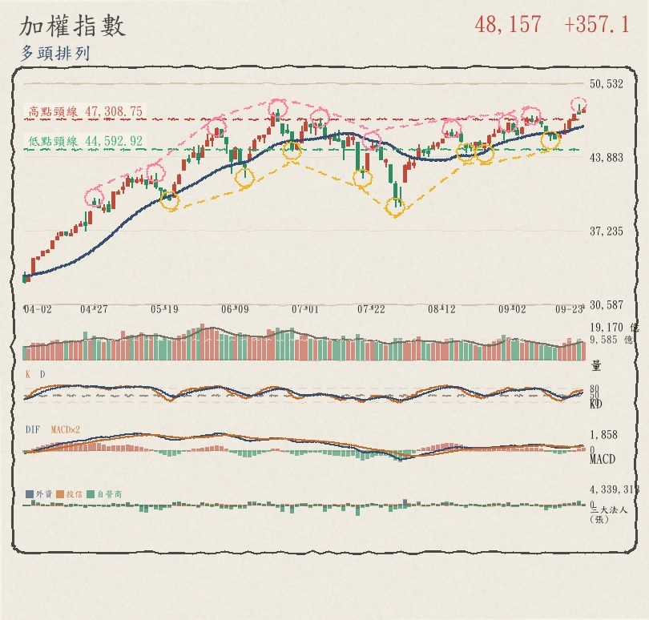
圖說：加權指數日 K（與個股圖相同標記）：黃圈＝轉折低點、粉圈＝轉折高點、虛線小圈＝還沒確認的轉折、藍線＝月線 MA20、水平虛線＝高點／低點頸線。最後一根是資料日當天。
本區塊為公開資料的技術面觀察，不構成投資建議，
不報牌、不預測、不下買賣決策。成交金額為集中市場總成交金額（含 ETF／權證），
與頁首摘要的「上市個股成交金額」口徑不同。標籤是統計，不是評分、也不是推薦。
上市 vs 上櫃（同期快篩）
加權 +0.75% vs 櫃買 -0.34%（方向相反，大小型股背離） → 方向相反（大小型股背離）
（兩個市場分開寫，不合併成一個數字；櫃買為 TPEX 公開資料）
櫃買歷史：TPEX 逐日回補 130 根；來源：櫃買中心 www/zh-tw/indexInfo/sectinx（逐日，官方；OpenAPI tpex_index 只回當月）
（TPEX OpenAPI 只回當月，故逐日回補；歷史不足就不算該條均線並標「資料不足」，不用錯數字）
近 20 個交易日大盤狀態回溯（最新在上）（點開看逐日主狀態／量比／量價象限）
用同一支程式回算最近 20 個交易日（主狀態 S1~S8 與量比 20 皆為當日收盤當時的判定，
不是事後調整）；量比 20 未公布的日子寫「—」。
好條件最多的（前 10）
不好條件最多的（前 10）
好條件（8 項）：站上月線、月線向上、底底高、頭頭高、突破頸線、相對大盤強、攻擊量（量增＋上漲）、守住今日高檔（距今日高點 1% 內）。
不好條件（8 項）：跌破前低、今日下跌、相對大盤弱、在月線之下、量增下跌（出貨）、貼近今日低點（1% 內）、跌破昨日低點、月線下彎。
兩邊都是同一組日線資料＋盤中即時價算出來的「符合項目數」，只是把方向相反的條件分開數；
條件數不是評分或推薦，不構成投資建議。
逆勢上漲（加權下跌、個股上漲）（34 上市 25／上櫃 9）
盤中爆量（估量比 ≥ 1.5）（19 上市 13／上櫃 6）
今日疲弱（跌幅前 10）（10 上市 5／上櫃 5）
逐檔（70 檔，依盤中成交金額排序）
景碩 3189 上市
955 +49.0（+5.41%）
高點墊高、底部不穩 盤中成交值 368.99 億・全榜第 1 名（上市第 1 名）・相對大盤 +5.95
好條件 6/8：站上月線、月線向上、頭頭高、突破頸線、相對大盤強、攻擊量（量增＋上漲）
不好條件 0/8：無
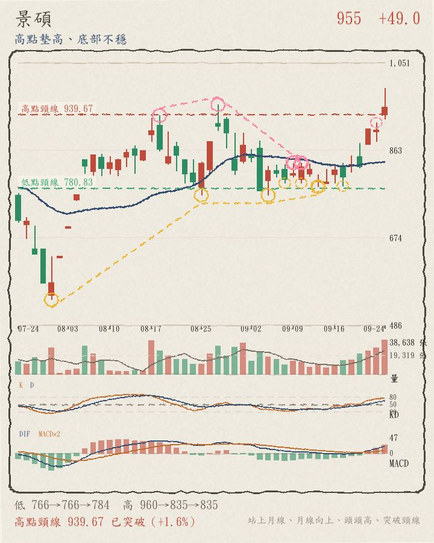
12:49 盤中 955（+5.41%），比加權指數強 5.95 個百分點、站上月線 835.65，已突破高點頸線 939.67，高點還在墊高（但底部沒同步墊高）。
- 月線位置：現價 955 在月線 835.65 之上（+14.3%）；5 日線 855.8 也在月線之上（短均在上）；月線向上
- 量能：以已過交易時間推估，今天成交量約是 20 日均量的 2.45 倍（爆量），比 20 日均量大不少；上漲又量增，量價配合
- 關鍵價位：高點頸線 939.67 已站上；前一交易日高點 922（高於 3.6%）；今天盤中高點 996（低於 4.1%）；今天盤中低點 929（高於 2.8%）
- 轉折結構：高點 960、835、835 墊高（頭頭高），但低點 766、766、784 沒有同步墊高；還沒確認的轉折低點 09-14 784、09-17 785；還沒確認的轉折高點 09-10 835、09-23 922（圖上虛線小圈）
聯發科 2454 上市
5230 +45.0（+0.87%）
高點墊高、底部不穩 盤中成交值 311.24 億・全榜第 2 名（上市第 2 名）・相對大盤 +1.41
好條件 5/8：站上月線、月線向上、頭頭高、突破頸線、相對大盤強
不好條件 0/8：無
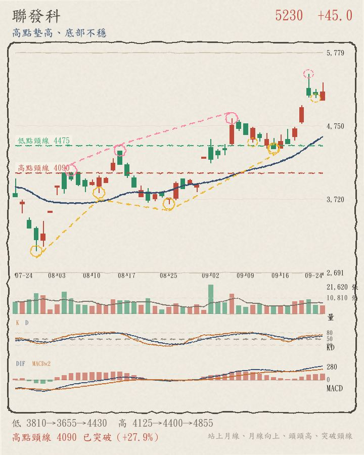
12:49 盤中 5230（+0.87%），比加權指數強 1.41 個百分點、站上月線 4531.25，已突破高點頸線 4090，高點還在墊高（但底部沒同步墊高）。
- 月線位置：現價 5230 在月線 4531.25 之上（+15.4%）；5 日線 4917 也在月線之上（短均在上）；月線向上
- 量能：以已過交易時間推估，今天成交量約是 20 日均量的 0.90 倍（量平），比 20 日均量少一些
- 關鍵價位：高點頸線 4090 已站上；前一交易日高點 5265（低於 0.7%）；今天盤中高點 5360（低於 2.4%）；今天盤中低點 5105（高於 2.4%）
- 轉折結構：高點 4125、4400、4855 墊高（頭頭高），但低點 3810、3655、4430 沒有同步墊高；還沒確認的轉折低點 09-15 4430、09-23 5140；還沒確認的轉折高點 09-22 5480（圖上虛線小圈）
台積電 2330 上市
2475 -25.0（-1.00%）
高點墊高、底部不穩 盤中成交值 231.98 億・全榜第 3 名（上市第 3 名）・相對大盤 -0.46
好條件 5/8：站上月線、月線向上、頭頭高、突破頸線、守住今日高檔（距今日高點 1% 內）
不好條件 3/8：今日下跌、相對大盤弱、貼近今日低點（1% 內）
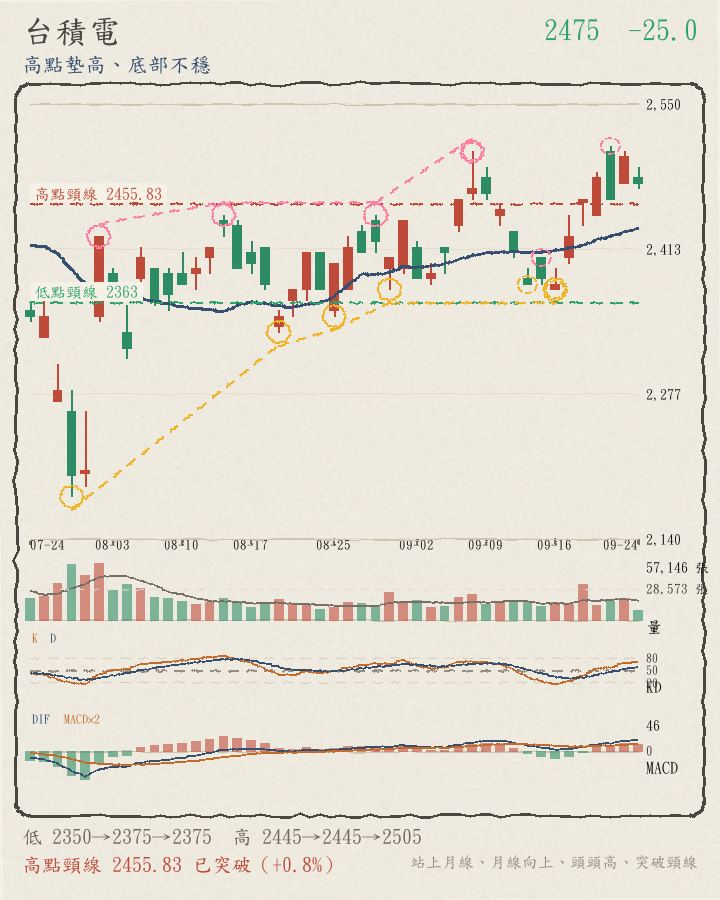
12:49 盤中 2475（-1.00%），比加權指數弱 0.46 個百分點、站上月線 2429.25，已突破高點頸線 2455.83，高點還在墊高（但底部沒同步墊高）。
- 月線位置：現價 2475 在月線 2429.25 之上（+1.9%）；5 日線 2465 也在月線之上（短均在上）；月線向上
- 量能：以已過交易時間推估，今天成交量約是 20 日均量的 0.59 倍（量縮），比 20 日均量少很多
- 關鍵價位：高點頸線 2455.83 已站上；前一交易日高點 2505（低於 1.2%）；今天盤中高點 2490（低於 0.6%）；今天盤中低點 2470（高於 0.2%）
- 轉折結構：高點 2445、2445、2505 墊高（頭頭高），但低點 2350、2375、2375 沒有同步墊高；還沒確認的轉折低點 09-14 2380、09-16 2375；還沒確認的轉折高點 09-15 2405、09-22 2510（圖上虛線小圈）
聯電 2303 上市
153 -7.0（-4.37%）
上升趨勢（底底高＋頭頭高） 盤中成交值 190.85 億・全榜第 4 名（上市第 4 名）・相對大盤 -3.83
好條件 5/8：站上月線、月線向上、底底高、頭頭高、突破頸線
不好條件 4/8：今日下跌、相對大盤弱、貼近今日低點（1% 內）、跌破昨日低點
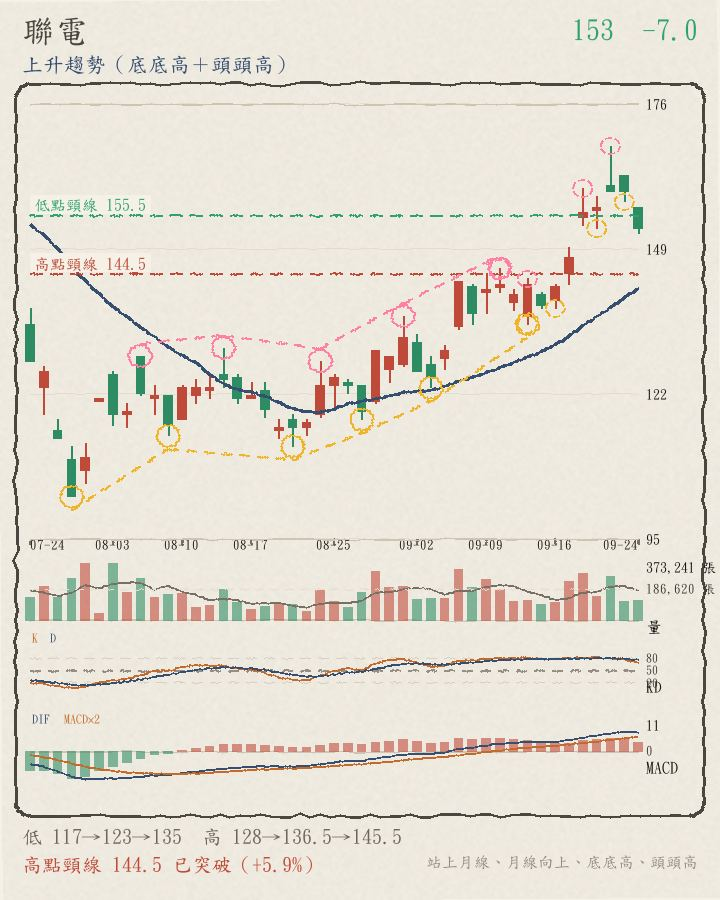
12:49 盤中 153（-4.37%），比加權指數弱 3.83 個百分點、站上月線 139.95，已突破高點頸線 144.5，轉折結構仍是底底高＋頭頭高。
- 月線位置：現價 153 在月線 139.95 之上（+9.3%）；5 日線 156.1 也在月線之上（短均在上）；月線向上
- 量能：以已過交易時間推估，今天成交量約是 20 日均量的 0.75 倍（量平），比 20 日均量少很多
- 關鍵價位：高點頸線 144.5 已站上；前一交易日高點 163（低於 6.1%）；今天盤中高點 157（低於 2.5%）；今天盤中低點 152（高於 0.7%）
- 轉折結構：低點 117、123、135 一路墊高、高點 128、136.5、145.5 也一路墊高，是底底高＋頭頭高；還沒確認的轉折低點 09-21 153、09-23 158；還沒確認的轉折高點 09-18 160.5、09-22 168.5（圖上虛線小圈）
國巨* 2327 上市
577 +4.0（+0.70%）
區間或轉弱 盤中成交值 169.21 億・全榜第 5 名（上市第 5 名）・相對大盤 +1.24
好條件 3/8：站上月線、月線向上、相對大盤強
不好條件 0/8：無
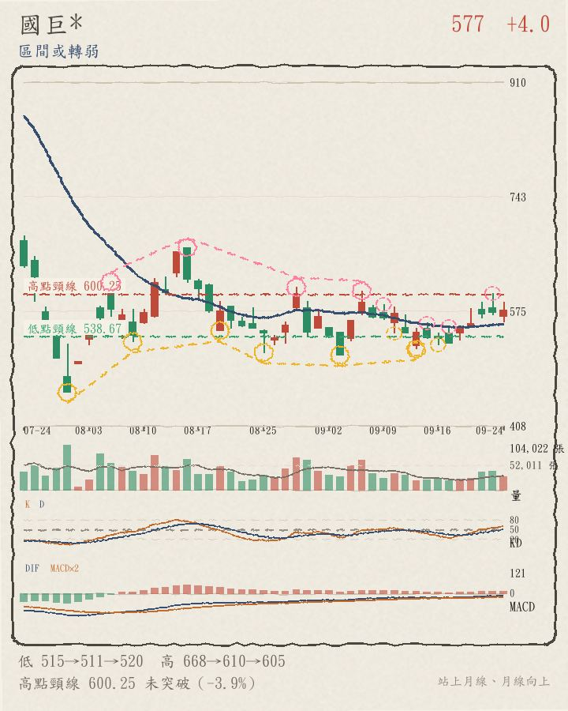
12:49 盤中 577（+0.70%），比加權指數強 1.24 個百分點、站上月線 555.65，離高點頸線 600.25 還差 3.9%，轉折還沒走出明顯方向。
- 月線位置：現價 577 在月線 555.65 之上（+3.8%）；5 日線 556 也在月線之上（短均在上）；月線向上
- 量能：以已過交易時間推估，今天成交量約是 20 日均量的 0.90 倍（量平），比 20 日均量少一些
- 關鍵價位：高點頸線 600.25 還沒突破，差 3.9%；前一交易日高點 601（低於 4.0%）；今天盤中高點 589（低於 2.0%）；今天盤中低點 560（高於 3.0%）
- 轉折結構：低點 515、511、520 與高點 668、610、605 都沒有明顯遞增，屬於區間震盪或轉弱；還沒確認的轉折低點 09-14 520、09-16 526；還沒確認的轉折高點 09-17 553、09-23 601（圖上虛線小圈）
友達 2409 上市
34.4 -0.3（-0.86%）
高點墊高、底部不穩 盤中成交值 160.28 億・全榜第 6 名（上市第 6 名）・相對大盤 -0.32
好條件 3/8：站上月線、月線向上、頭頭高
不好條件 3/8：今日下跌、相對大盤弱、量增下跌（出貨）
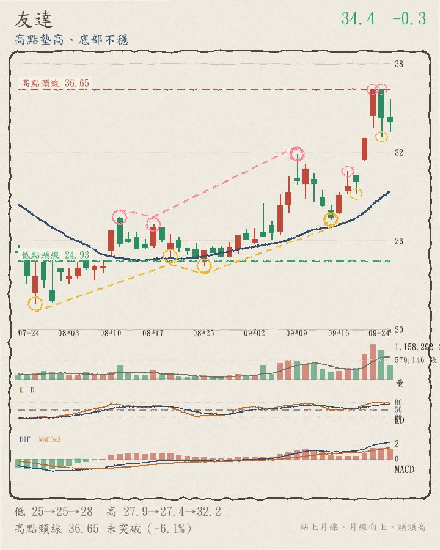
12:49 盤中 34.4（-0.86%），比加權指數弱 0.32 個百分點、站上月線 29.258，離高點頸線 36.65 還差 6.1%，高點還在墊高（但底部沒同步墊高）。
- 月線位置：現價 34.4 在月線 29.258 之上（+17.6%）；5 日線 33.01 也在月線之上（短均在上）；月線向上
- 量能：以已過交易時間推估，今天成交量約是 20 日均量的 1.46 倍（量增），比 20 日均量大不少；下跌卻量增，量價背離
- 關鍵價位：高點頸線 36.65 還沒突破，差 6.1%；前一交易日高點 36.65（低於 6.1%）；今天盤中高點 35.95（低於 4.3%）；今天盤中低點 33.75（高於 1.9%）
- 轉折結構：高點 27.9、27.4、32.2 墊高（頭頭高），但低點 25.25、24.6、27.75 沒有同步墊高；還沒確認的轉折低點 09-18 29.5、09-23 33.4；還沒確認的轉折高點 09-22 36.65、09-23 36.65（圖上虛線小圈）
南亞科 2408 上市
497.5 -17.5（-3.40%）
區間或轉弱 盤中成交值 150.6 億・全榜第 7 名（上市第 7 名）・相對大盤 -2.86
好條件 0/8：無
不好條件 6/8：今日下跌、相對大盤弱、在月線之下、貼近今日低點（1% 內）、跌破昨日低點、月線下彎
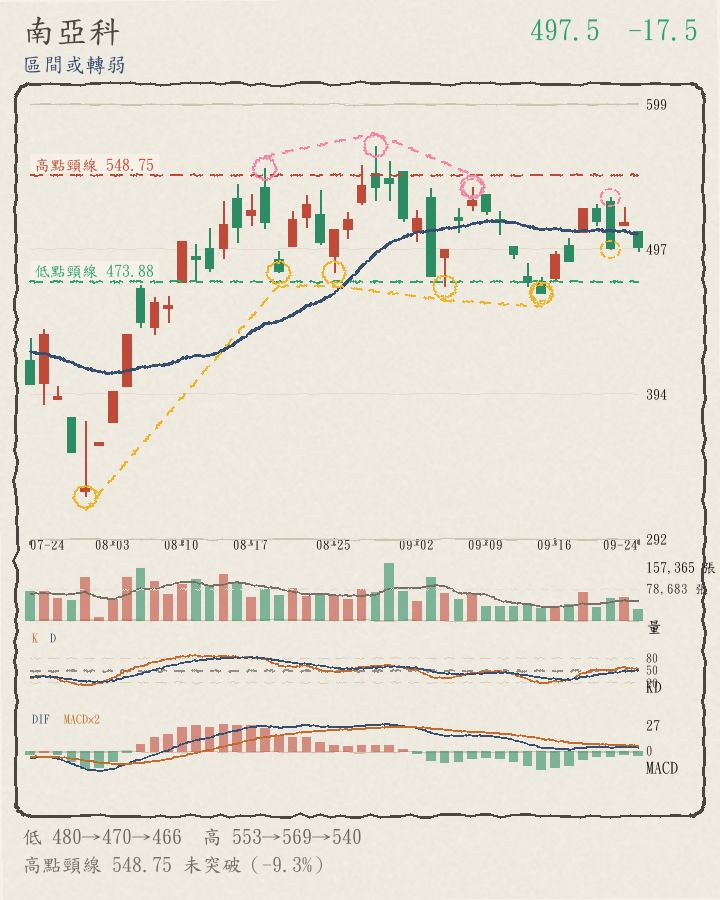
12:49 盤中 497.5（-3.40%），比加權指數弱 2.86 個百分點、跌破月線 509.225，離高點頸線 548.75 還差 9.3%，轉折還沒走出明顯方向。
- 月線位置：現價 497.5 在月線 509.225 之下（-2.3%）；5 日線 508.2 也在月線之下（短均在下）；月線向下
- 量能：以已過交易時間推估，今天成交量約是 20 日均量的 0.56 倍（量縮），比 20 日均量少很多
- 關鍵價位：高點頸線 548.75 還沒突破，差 9.3%；前一交易日高點 526（低於 5.4%）；今天盤中高點 509（低於 2.3%）；今天盤中低點 495（高於 0.5%）
- 轉折結構：低點 480、470、465.5 與高點 553、569、540 都沒有明顯遞增，屬於區間震盪或轉弱；還沒確認的轉折低點 09-15 465.5、09-22 496；還沒確認的轉折高點 09-08 540、09-22 533（圖上虛線小圈）
量縮
↑ 回上方清單
健策 3653 上市
6765 +355.0（+5.54%）
高點墊高、底部不穩 盤中成交值 149.57 億・全榜第 8 名（上市第 8 名）・相對大盤 +6.08
好條件 7/8：站上月線、月線向上、頭頭高、突破頸線、相對大盤強、攻擊量（量增＋上漲）、守住今日高檔（距今日高點 1% 內）
不好條件 0/8：無
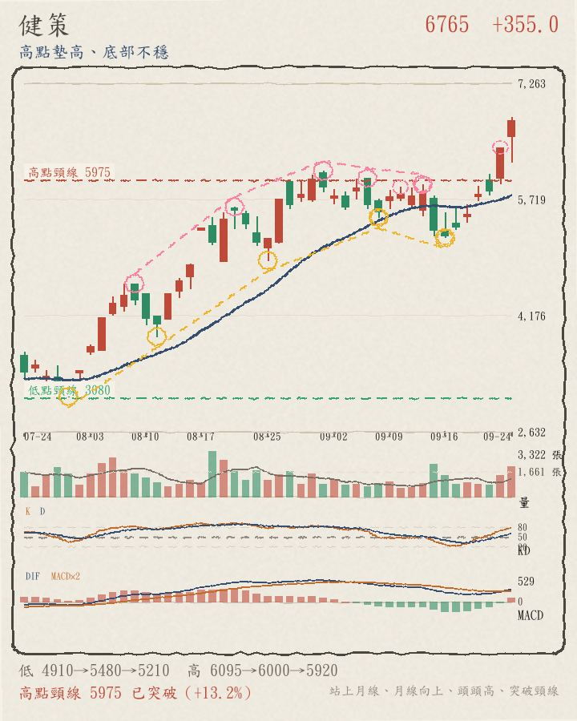
12:49 盤中 6765（+5.54%），比加權指數強 6.08 個百分點、站上月線 5718.25，已突破高點頸線 5975，高點還在墊高（但底部沒同步墊高）。
- 月線位置：現價 6765 在月線 5718.25 之上（+18.3%）；5 日線 5782 也在月線之上（短均在上）；月線向上
- 量能：以已過交易時間推估，今天成交量約是 20 日均量的 2.31 倍（爆量），比 20 日均量大不少；上漲又量增，量價配合
- 關鍵價位：高點頸線 5975 已站上；前一交易日高點 6410（高於 5.5%）；今天盤中高點 6815（低於 0.7%）；今天盤中低點 6215（高於 8.8%）
- 轉折結構：高點 6095、6000、5920 墊高（頭頭高），但低點 4910、5480、5210 沒有同步墊高；還沒確認的轉折低點 09-08 5480、09-16 5210；還沒確認的轉折高點 09-14 5920、09-23 6410（圖上虛線小圈）
欣興 3037 上市
1170 +10.0（+0.86%）
高點墊高、底部不穩 盤中成交值 143.9 億・全榜第 9 名（上市第 9 名）・相對大盤 +1.40
好條件 4/8：站上月線、頭頭高、突破頸線、相對大盤強
不好條件 1/8：月線下彎
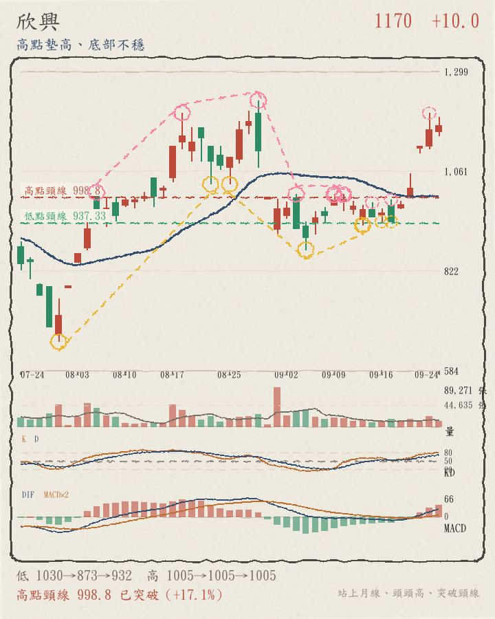
12:49 盤中 1170（+0.86%），比加權指數強 1.40 個百分點、站上月線 1001.4，已突破高點頸線 998.8，高點還在墊高（但底部沒同步墊高）。
- 月線位置：現價 1170 在月線 1001.4 之上（+16.8%）；5 日線 1044.2 也在月線之上（短均在上）；月線向下
- 量能：以已過交易時間推估，今天成交量約是 20 日均量的 0.66 倍（量縮），比 20 日均量少很多；上漲但量縮，量價背離
- 關鍵價位：高點頸線 998.8 已站上；前一交易日高點 1200（低於 2.5%）；今天盤中高點 1190（低於 1.7%）；今天盤中低點 1145（高於 2.2%）
- 轉折結構：高點 1005、1005、1005 墊高（頭頭高），但低點 1030、873、932 沒有同步墊高；還沒確認的轉折低點 09-16 940、09-17 940；還沒確認的轉折高點 09-17 993、09-23 1200（圖上虛線小圈）
金像電 2368 上市
1090 -50.0（-4.39%）
高點墊高、底部不穩 盤中成交值 138.15 億・全榜第 10 名（上市第 10 名）・相對大盤 -3.85
好條件 3/8：站上月線、月線向上、頭頭高
不好條件 3/8：今日下跌、相對大盤弱、量增下跌（出貨）
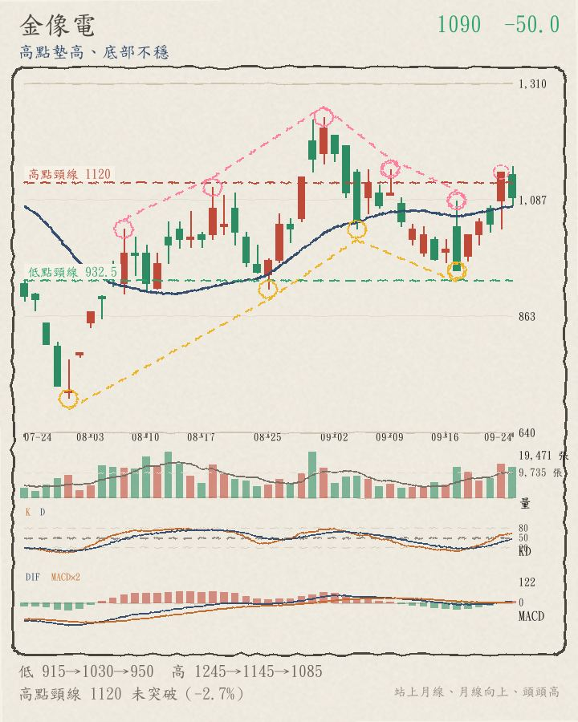
12:49 盤中 1090（-4.39%），比加權指數弱 3.85 個百分點、站上月線 1070.95，離高點頸線 1120 還差 2.7%，高點還在墊高（但底部沒同步墊高）。
- 月線位置：現價 1090 在月線 1070.95 之上（+1.8%）；5 日線 1039 也在月線之下（短均在下）；月線向上
- 量能：以已過交易時間推估，今天成交量約是 20 日均量的 1.85 倍（爆量），比 20 日均量大不少；下跌卻量增，量價背離
- 關鍵價位：高點頸線 1120 還沒突破，差 2.7%；前一交易日高點 1140（低於 4.4%）；今天盤中高點 1150（低於 5.2%）；今天盤中低點 1075（高於 1.4%）
- 轉折結構：高點 1245、1145、1085 墊高（頭頭高），但低點 915、1030、950 沒有同步墊高；還沒確認的轉折低點 09-17 950；還沒確認的轉折高點 09-17 1085、09-23 1140（圖上虛線小圈）
南電 8046 上市
1210 +0.0（+0.00%）
高點墊高、底部不穩 盤中成交值 132.36 億・全榜第 11 名（上市第 11 名）・相對大盤 +0.54
好條件 4/8：站上月線、頭頭高、突破頸線、相對大盤強
不好條件 1/8：月線下彎
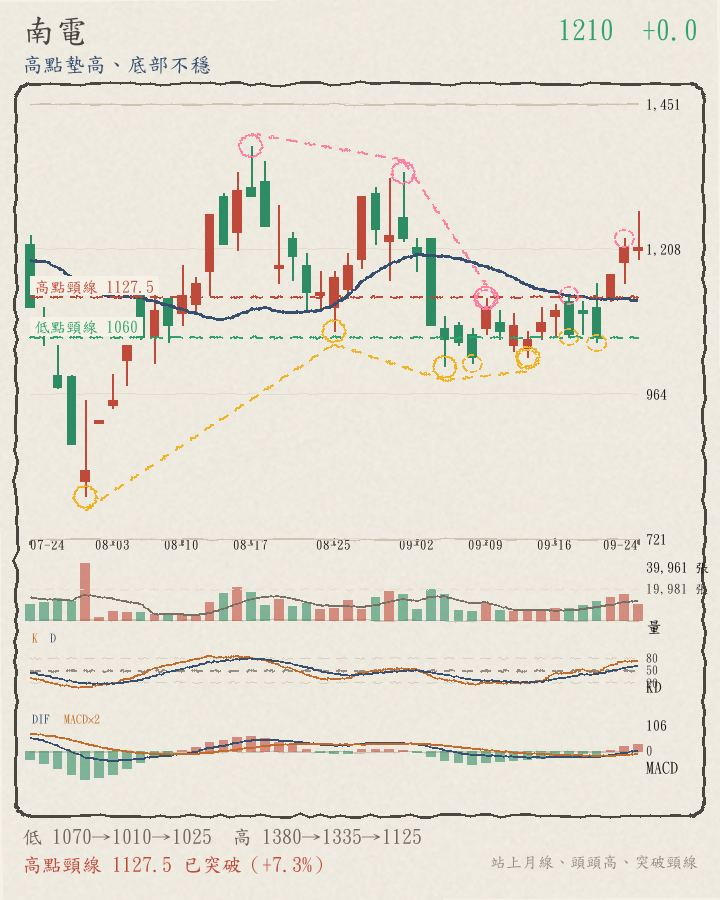
12:49 盤中 1210（+0.00%），比加權指數強 0.54 個百分點、站上月線 1125.25，已突破高點頸線 1127.5，高點還在墊高（但底部沒同步墊高）。
- 月線位置：現價 1210 在月線 1125.25 之上（+7.5%）；5 日線 1120 也在月線之下（短均在下）；月線向下
- 量能：以已過交易時間推估，今天成交量約是 20 日均量的 1.13 倍（量增），比 20 日均量大一些
- 關鍵價位：高點頸線 1127.5 已站上；前一交易日高點 1225（低於 1.2%）；今天盤中高點 1270（低於 4.7%）；今天盤中低點 1190（高於 1.7%）
- 轉折結構：高點 1380、1335、1125 墊高（頭頭高），但低點 1070、1010、1025 沒有同步墊高；還沒確認的轉折低點 09-17 1060、09-21 1050；還沒確認的轉折高點 09-17 1130、09-23 1225（圖上虛線小圈）
台燿 6274 上櫃
1480 +20.0（+1.37%）
高點墊高、底部不穩 盤中成交值 131.28 億・全榜第 12 名（上櫃第 1 名）・相對大盤 +1.91
好條件 4/8：站上月線、頭頭高、相對大盤強、攻擊量（量增＋上漲）
不好條件 2/8：貼近今日低點（1% 內）、月線下彎
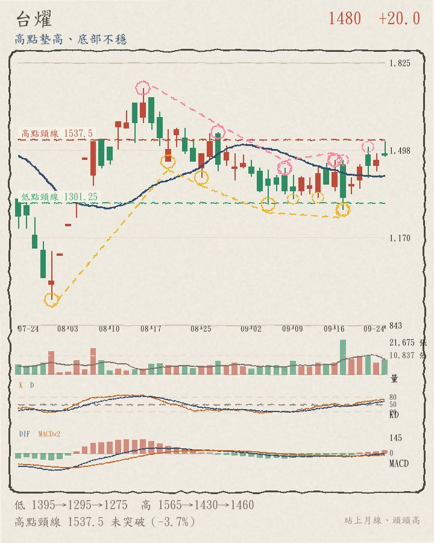
12:49 盤中 1480（+1.37%），比加權指數強 1.91 個百分點、站上月線 1399，離高點頸線 1537.5 還差 3.7%，高點還在墊高（但底部沒同步墊高）。
- 月線位置：現價 1480 在月線 1399 之上（+5.8%）；5 日線 1405 也在月線之上（短均在上）；月線向下
- 量能：以已過交易時間推估，今天成交量約是 20 日均量的 1.43 倍（量增），比 20 日均量大不少；上漲又量增，量價配合
- 關鍵價位：高點頸線 1537.5 還沒突破，差 3.7%；前一交易日高點 1485（低於 0.3%）；今天盤中高點 1530（低於 3.3%）；今天盤中低點 1475（高於 0.3%）
- 轉折結構：高點 1565、1430、1460 墊高（頭頭高），但低點 1395、1295、1275 沒有同步墊高；還沒確認的轉折低點 09-14 1320、09-17 1275；還沒確認的轉折高點 09-17 1460、09-22 1510（圖上虛線小圈）
南亞 1303 上市
236 +8.5（+3.74%）
上升趨勢（底底高＋頭頭高） 盤中成交值 127.91 億・全榜第 13 名（上市第 12 名）・相對大盤 +4.28
好條件 6/8：站上月線、月線向上、底底高、頭頭高、相對大盤強、守住今日高檔（距今日高點 1% 內）
不好條件 0/8：無
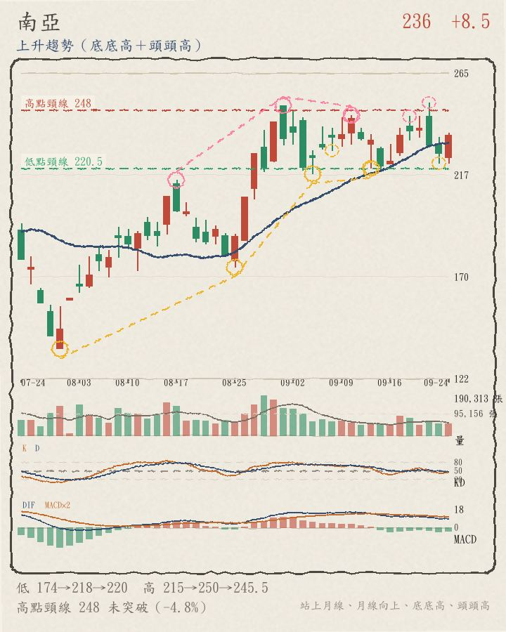
12:49 盤中 236（+3.74%），比加權指數強 4.28 個百分點、站上月線 232.075，離高點頸線 248 還差 4.8%，轉折結構仍是底底高＋頭頭高。
- 月線位置：現價 236 在月線 232.075 之上（+1.7%）；5 日線 234.5 也在月線之上（短均在上）；月線向上
- 量能：以已過交易時間推估，今天成交量約是 20 日均量的 0.71 倍（量平），比 20 日均量少很多；上漲但量縮，量價背離
- 關鍵價位：高點頸線 248 還沒突破，差 4.8%；前一交易日高點 235（高於 0.4%）；今天盤中高點 237（低於 0.4%）；今天盤中低點 223（高於 5.8%）
- 轉折結構：低點 174、218、220.5 一路墊高、高點 215、250、245.5 也一路墊高，是底底高＋頭頭高；還沒確認的轉折低點 09-14 220.5、09-23 223；還沒確認的轉折高點 09-18 245、09-22 251.5（圖上虛線小圈）
台達電 2308 上市
1905 +5.0（+0.26%）
高點墊高、底部不穩 盤中成交值 122.55 億・全榜第 14 名（上市第 13 名）・相對大盤 +0.80
好條件 4/8：站上月線、月線向上、頭頭高、相對大盤強
不好條件 0/8：無
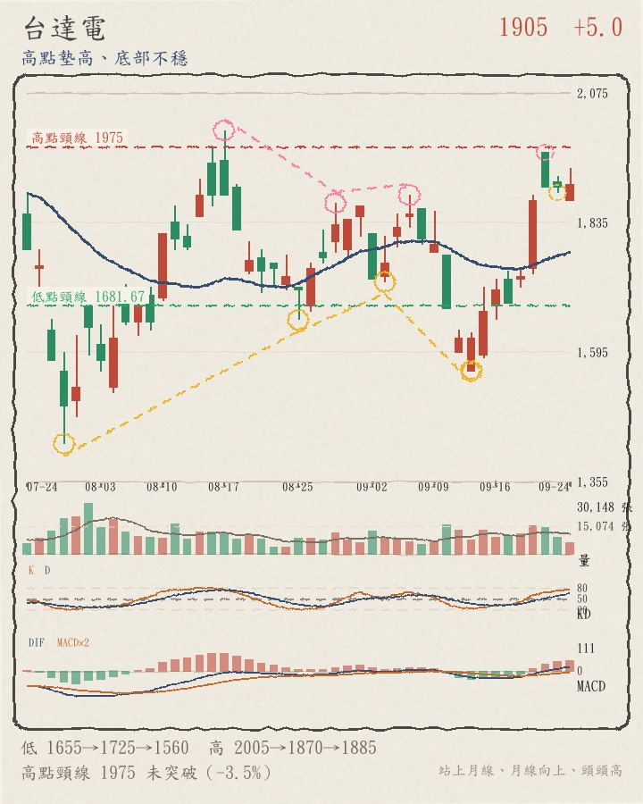
12:49 盤中 1905（+0.26%），比加權指數強 0.80 個百分點、站上月線 1773，離高點頸線 1975 還差 3.5%，高點還在墊高（但底部沒同步墊高）。
- 月線位置：現價 1905 在月線 1773 之上（+7.5%）；5 日線 1819 也在月線之上（短均在上）；月線向上
- 量能：以已過交易時間推估，今天成交量約是 20 日均量的 0.71 倍（量平），比 20 日均量少很多；上漲但量縮，量價背離
- 關鍵價位：高點頸線 1975 還沒突破，差 3.5%；前一交易日高點 1920（低於 0.8%）；今天盤中高點 1935（低於 1.6%）；今天盤中低點 1875（高於 1.6%）
- 轉折結構：高點 2005、1870、1885 墊高（頭頭高），但低點 1655、1725、1560 沒有同步墊高；還沒確認的轉折低點 09-14 1560、09-23 1890；還沒確認的轉折高點 09-22 1965（圖上虛線小圈）
合晶 6182 上櫃
120 +4.5（+3.90%）
高點墊高、底部不穩 盤中成交值 99.47 億・全榜第 15 名（上櫃第 2 名）・相對大盤 +4.44
好條件 5/8：站上月線、月線向上、頭頭高、相對大盤強、攻擊量（量增＋上漲）
不好條件 0/8：無
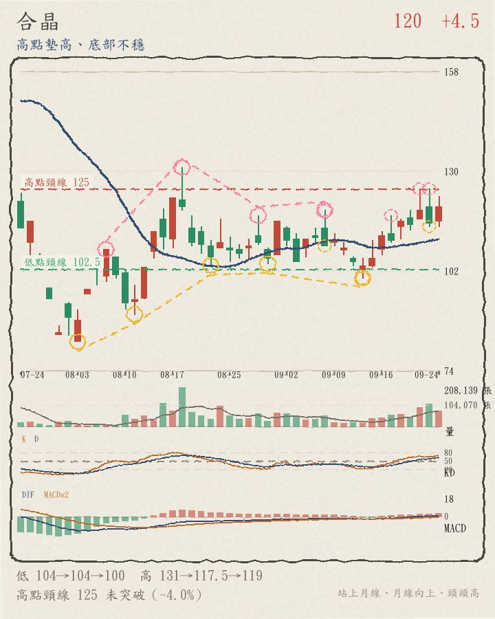
12:49 盤中 120（+3.90%），比加權指數強 4.44 個百分點、站上月線 110.375，離高點頸線 125 還差 4.0%，高點還在墊高（但底部沒同步墊高）。
- 月線位置：現價 120 在月線 110.375 之上（+8.7%）；5 日線 115.2 也在月線之上（短均在上）；月線向上
- 量能：以已過交易時間推估，今天成交量約是 20 日均量的 2.10 倍（爆量），比 20 日均量大不少；上漲又量增，量價配合
- 關鍵價位：高點頸線 125 還沒突破，差 4.0%；前一交易日高點 125（低於 4.0%）；今天盤中高點 123（低於 2.4%）；今天盤中低點 114.5（高於 4.8%）
- 轉折結構：高點 131、117.5、119 墊高（頭頭高），但低點 103.5、104、100 沒有同步墊高；還沒確認的轉折低點 09-14 100、09-23 114.5；還沒確認的轉折高點 09-22 125、09-23 125（圖上虛線小圈）
雙鴻 3324 上櫃
1730 +135.0（+8.46%）
高點墊高、底部不穩 盤中成交值 97.9 億・全榜第 16 名（上櫃第 3 名）・相對大盤 +9.00
好條件 6/8：站上月線、月線向上、頭頭高、突破頸線、相對大盤強、攻擊量（量增＋上漲）
不好條件 0/8：無
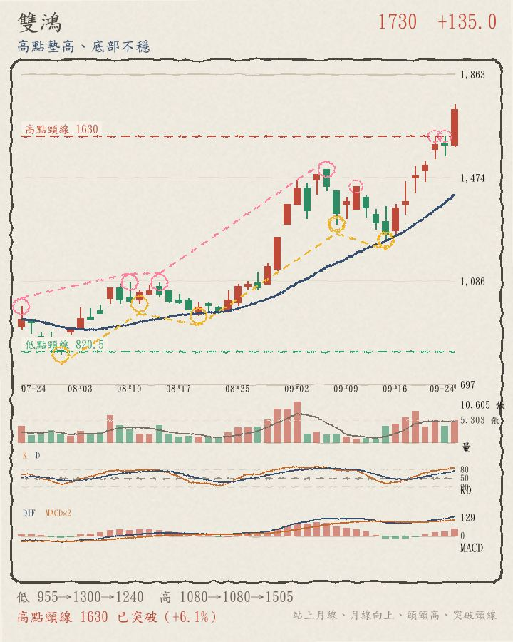
12:49 盤中 1730（+8.46%），比加權指數強 9.00 個百分點、站上月線 1378.25，已突破高點頸線 1630，高點還在墊高（但底部沒同步墊高）。
- 月線位置：現價 1730 在月線 1378.25 之上（+25.5%）；5 日線 1516 也在月線之上（短均在上）；月線向上
- 量能：以已過交易時間推估，今天成交量約是 20 日均量的 1.53 倍（爆量），比 20 日均量大不少；上漲又量增，量價配合
- 關鍵價位：高點頸線 1630 已站上；前一交易日高點 1630（高於 6.1%）；今天盤中高點 1750（低於 1.1%）；今天盤中低點 1590（高於 8.8%）
- 轉折結構：高點 1080、1080、1505 墊高（頭頭高），但低點 955、1300、1240 沒有同步墊高；還沒確認的轉折低點 09-08 1300、09-15 1240；還沒確認的轉折高點 09-22 1630、09-23 1630（圖上虛線小圈）
創意 3443 上市
8475 +90.0（+1.07%）
上升趨勢（底底高＋頭頭高） 盤中成交值 97.46 億・全榜第 17 名（上市第 14 名）・相對大盤 +1.61
好條件 7/8：站上月線、月線向上、底底高、頭頭高、突破頸線、相對大盤強、守住今日高檔（距今日高點 1% 內）
不好條件 0/8：無
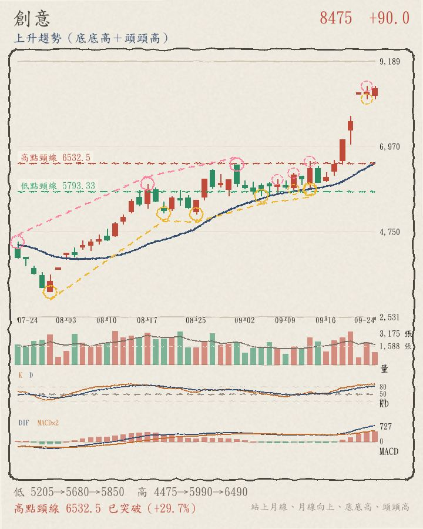
12:49 盤中 8475（+1.07%），比加權指數強 1.61 個百分點、站上月線 6416.5，已突破高點頸線 6532.5，轉折結構仍是底底高＋頭頭高。
- 月線位置：現價 8475 在月線 6416.5 之上（+32.1%）；5 日線 7605 也在月線之上（短均在上）；月線向上
- 量能：以已過交易時間推估，今天成交量約是 20 日均量的 0.73 倍（量平），比 20 日均量少很多；上漲但量縮，量價背離
- 關鍵價位：高點頸線 6532.5 已站上；前一交易日高點 8540（低於 0.8%）；今天盤中高點 8545（低於 0.8%）；今天盤中低點 8205（高於 3.3%）
- 轉折結構：低點 5205、5680、5850 一路墊高、高點 4475、5990、6490 也一路墊高，是底底高＋頭頭高；還沒確認的轉折低點 09-14 5850、09-23 8200；還沒確認的轉折高點 09-14 6575、09-23 8540（圖上虛線小圈）
聯茂 6213 上市
595 +54.0（+9.98%）
高點墊高、底部不穩 盤中成交值 96.17 億・全榜第 18 名（上市第 15 名）・相對大盤 +10.52
好條件 5/8：站上月線、月線向上、頭頭高、突破頸線、相對大盤強
不好條件 1/8：貼近今日低點（1% 內）
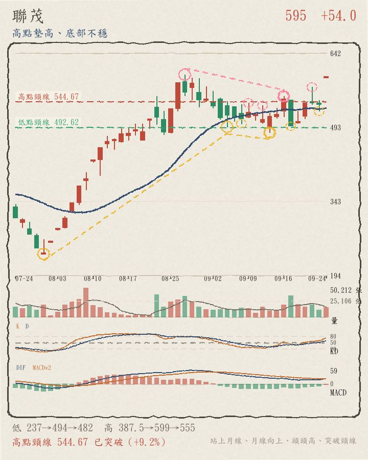
12:49 盤中 595（+9.98%），比加權指數強 10.52 個百分點、站上月線 529.6，已突破高點頸線 544.67，高點還在墊高（但底部沒同步墊高）。
- 月線位置：現價 595 在月線 529.6 之上（+12.3%）；5 日線 525.2 也在月線之下（短均在下）；月線向上
- 量能：以已過交易時間推估，今天成交量約是 20 日均量的 1.04 倍（量平），跟 20 日均量差不多
- 關鍵價位：高點頸線 544.67 已站上；前一交易日高點 547（高於 8.8%）；今天盤中高點 595（高於 0.0%）；今天盤中低點 592（高於 0.5%）
- 轉折結構：高點 387.5、599、555 墊高（頭頭高），但低點 237、493.5、482 沒有同步墊高；還沒確認的轉折低點 09-17 495、09-23 525；還沒確認的轉折高點 09-16 555、09-22 574（圖上虛線小圈）
台光電 2383 上市
4990 -30.0（-0.60%）
區間或轉弱 盤中成交值 91.17 億・全榜第 19 名（上市第 16 名）・相對大盤 -0.06
好條件 0/8：無
不好條件 5/8：今日下跌、相對大盤弱、在月線之下、貼近今日低點（1% 內）、月線下彎
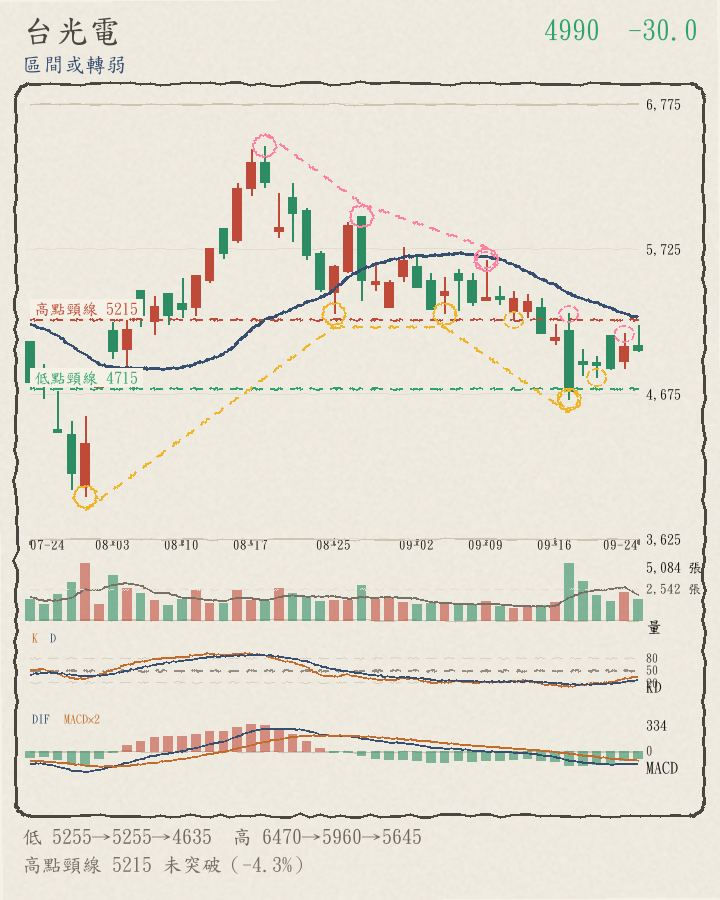
12:49 盤中 4990（-0.60%），比加權指數弱 0.06 個百分點、跌破月線 5256，離高點頸線 5215 還差 4.3%，轉折還沒走出明顯方向。
- 月線位置：現價 4990 在月線 5256 之下（-5.1%）；5 日線 4872 也在月線之下（短均在下）；月線向下
- 量能：以已過交易時間推估，今天成交量約是 20 日均量的 1.14 倍（量增），比 20 日均量大一些；下跌卻量增，量價背離
- 關鍵價位：高點頸線 5215 還沒突破，差 4.3%；前一交易日高點 5110（低於 2.3%）；今天盤中高點 5170（低於 3.5%）；今天盤中低點 4980（高於 0.2%）
- 轉折結構：低點 5255、5255、4635 與高點 6470、5960、5645 都沒有明顯遞增，屬於區間震盪或轉弱；還沒確認的轉折低點 09-17 4635、09-21 4795；還沒確認的轉折高點 09-17 5255、09-23 5110（圖上虛線小圈）
量增
↑ 回上方清單
穩懋 3105 上櫃
501 +4.0（+0.80%）
高點墊高、底部不穩 盤中成交值 89.83 億・全榜第 20 名（上櫃第 4 名）・相對大盤 +1.34
好條件 5/8：站上月線、月線向上、頭頭高、相對大盤強、守住今日高檔（距今日高點 1% 內）
不好條件 0/8：無
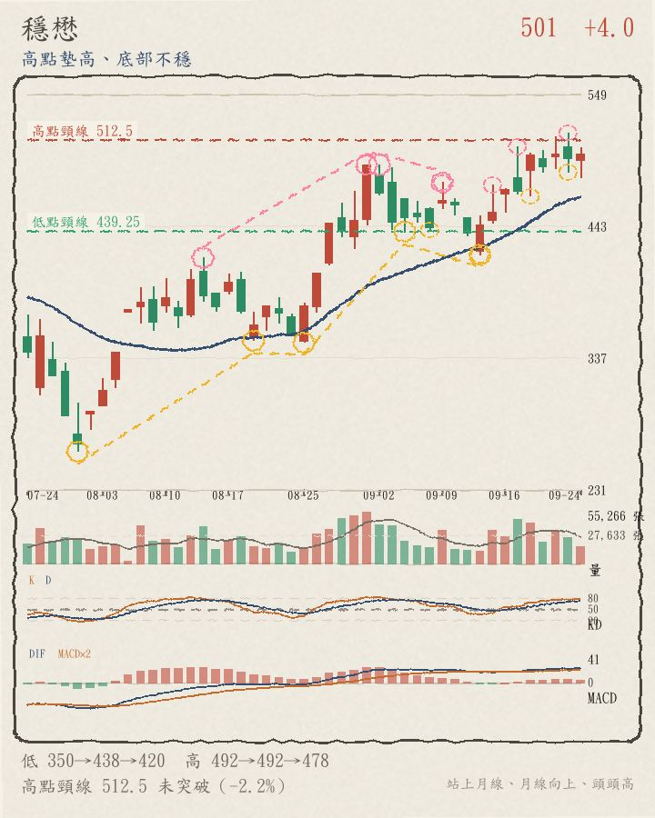
12:49 盤中 501（+0.80%），比加權指數強 1.34 個百分點、站上月線 463.725，離高點頸線 512.5 還差 2.2%，高點還在墊高（但底部沒同步墊高）。
- 月線位置：現價 501 在月線 463.725 之上（+8.0%）；5 日線 491.9 也在月線之上（短均在上）；月線向上
- 量能：以已過交易時間推估，今天成交量約是 20 日均量的 0.64 倍（量縮），比 20 日均量少很多；上漲但量縮，量價背離
- 關鍵價位：高點頸線 512.5 還沒突破，差 2.2%；前一交易日高點 518（低於 3.3%）；今天盤中高點 506（低於 1.0%）；今天盤中低點 482（高於 3.9%）
- 轉折結構：高點 492、492、478 墊高（頭頭高），但低點 349.5、438.5、420 沒有同步墊高；還沒確認的轉折低點 09-18 467、09-23 486.5；還沒確認的轉折高點 09-17 507、09-23 518（圖上虛線小圈）
禾伸堂 3026 上市
806 +38.0（+4.95%）
上升趨勢（底底高＋頭頭高） 盤中成交值 88.38 億・全榜第 21 名（上市第 17 名）・相對大盤 +5.49
好條件 6/8：站上月線、月線向上、底底高、頭頭高、相對大盤強、攻擊量（量增＋上漲）
不好條件 0/8：無
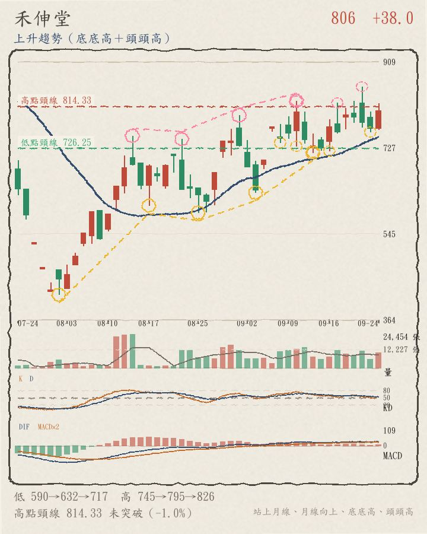
12:49 盤中 806（+4.95%），比加權指數強 5.49 個百分點、站上月線 743.15，離高點頸線 814.33 還差 1.0%，轉折結構仍是底底高＋頭頭高。
- 月線位置：現價 806 在月線 743.15 之上（+8.5%）；5 日線 779.2 也在月線之上（短均在上）；月線向上
- 量能：以已過交易時間推估，今天成交量約是 20 日均量的 1.29 倍（量增），比 20 日均量大不少；上漲又量增，量價配合
- 關鍵價位：高點頸線 814.33 還沒突破，差 1.0%；前一交易日高點 803（高於 0.4%）；今天盤中高點 820（低於 1.7%）；今天盤中低點 765（高於 5.4%）
- 轉折結構：低點 590、632、717 一路墊高、高點 745、795、826 也一路墊高，是底底高＋頭頭高；還沒確認的轉折低點 09-16 720、09-23 760；還沒確認的轉折高點 09-17 822、09-22 856（圖上虛線小圈）
貿聯-KY 3665 上市
2295 -45.0（-1.92%）
區間或轉弱 盤中成交值 86.36 億・全榜第 22 名（上市第 18 名）・相對大盤 -1.38
好條件 2/8：站上月線、月線向上
不好條件 4/8：今日下跌、相對大盤弱、量增下跌（出貨）、貼近今日低點（1% 內）
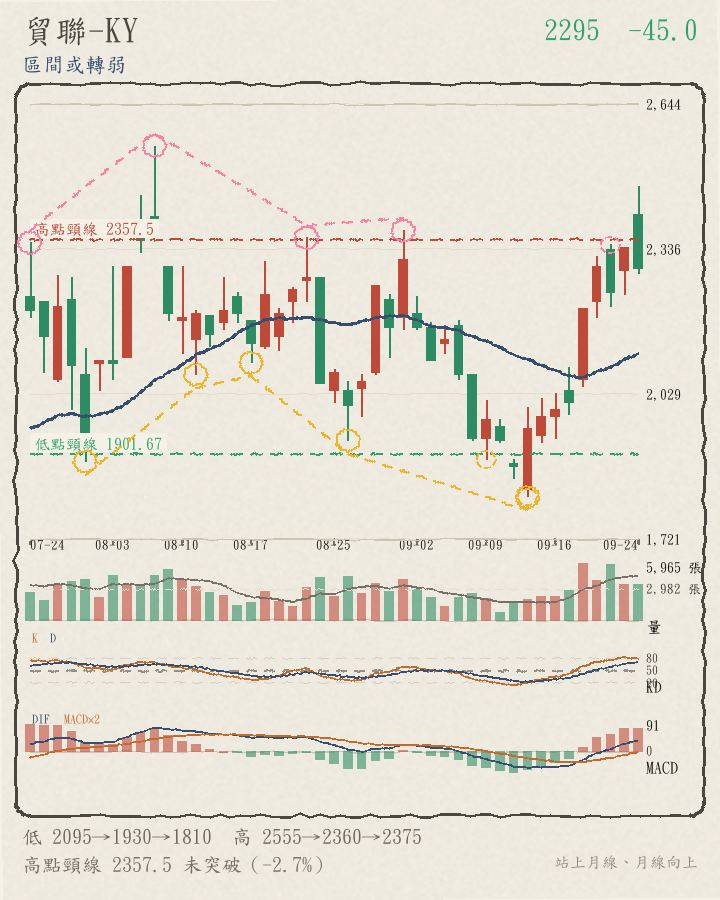
12:49 盤中 2295（-1.92%），比加權指數弱 1.38 個百分點、站上月線 2101.75，離高點頸線 2357.5 還差 2.7%，轉折還沒走出明顯方向。
- 月線位置：現價 2295 在月線 2101.75 之上（+9.2%）；5 日線 2221 也在月線之上（短均在上）；月線向上
- 量能：以已過交易時間推估，今天成交量約是 20 日均量的 1.44 倍（量增），比 20 日均量大不少；下跌卻量增，量價背離
- 關鍵價位：高點頸線 2357.5 還沒突破，差 2.7%；前一交易日高點 2340（低於 1.9%）；今天盤中高點 2470（低於 7.1%）；今天盤中低點 2285（高於 0.4%）
- 轉折結構：低點 2095、1930、1810 與高點 2555、2360、2375 都沒有明顯遞增，屬於區間震盪或轉弱；還沒確認的轉折低點 09-09 1890、09-14 1810；還沒確認的轉折高點 09-22 2345（圖上虛線小圈）
南茂 8150 上市
111.5 +4.5（+4.21%）
高點墊高、底部不穩 盤中成交值 82.44 億・全榜第 23 名（上市第 19 名）・相對大盤 +4.75
好條件 6/8：站上月線、月線向上、頭頭高、突破頸線、相對大盤強、攻擊量（量增＋上漲）
不好條件 0/8：無
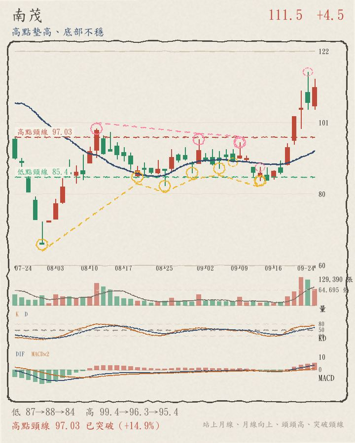
12:49 盤中 111.5（+4.21%），比加權指數強 4.75 個百分點、站上月線 91.875，已突破高點頸線 97.03，高點還在墊高（但底部沒同步墊高）。
- 月線位置：現價 111.5 在月線 91.875 之上（+21.4%）；5 日線 99.24 也在月線之上（短均在上）；月線向上
- 量能：以已過交易時間推估，今天成交量約是 20 日均量的 3.03 倍（爆量），比 20 日均量大不少；上漲又量增，量價配合
- 關鍵價位：高點頸線 97.03 已站上；前一交易日高點 116（低於 3.9%）；今天盤中高點 114（低於 2.2%）；今天盤中低點 105（高於 6.2%）
- 轉折結構：高點 99.4、96.3、95.4 墊高（頭頭高），但低點 86.6、87.9、84.3 沒有同步墊高；還沒確認的轉折低點 09-08 89.7、09-14 84.3；還沒確認的轉折高點 09-14 88.2、09-23 116（圖上虛線小圈）
嘉晶 3016 上市
160 +14.5（+9.97%）
上升趨勢（底底高＋頭頭高） 盤中成交值 77.56 億・全榜第 24 名（上市第 20 名）・相對大盤 +10.51
好條件 7/8：站上月線、月線向上、底底高、頭頭高、突破頸線、相對大盤強、攻擊量（量增＋上漲）
不好條件 0/8：無
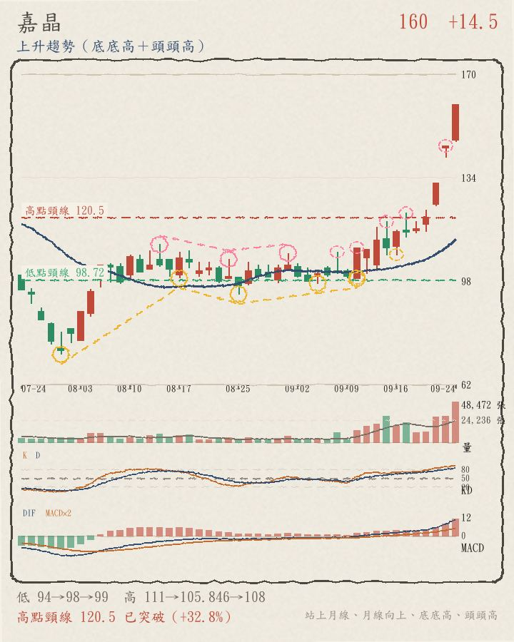
12:49 盤中 160（+9.97%），比加權指數強 10.51 個百分點、站上月線 109.79，已突破高點頸線 120.5，轉折結構仍是底底高＋頭頭高。
- 月線位置：現價 160 在月線 109.79 之上（+45.7%）；5 日線 126.1 也在月線之上（短均在上）；月線向上
- 量能：以已過交易時間推估，今天成交量約是 20 日均量的 4.90 倍（爆量），比 20 日均量大不少；上漲又量增，量價配合
- 關鍵價位：高點頸線 120.5 已站上；前一交易日高點 145.5（高於 10.0%）；今天盤中高點 160（高於 0.0%）；今天盤中低點 147（高於 8.8%）
- 轉折結構：低點 93.7634、97.5、99.3 一路墊高、高點 111、105.846、108 也一路墊高，是底底高＋頭頭高；還沒確認的轉折低點 09-10 99.3、09-16 107.5；還沒確認的轉折高點 09-17 122、09-23 145.5（圖上虛線小圈）
臻鼎-KY 4958 上市
475 +2.0（+0.42%）
上升趨勢（底底高＋頭頭高） 盤中成交值 75.38 億・全榜第 25 名（上市第 21 名）・相對大盤 +0.96
好條件 4/8：月線向上、底底高、頭頭高、相對大盤強
不好條件 2/8：在月線之下、貼近今日低點（1% 內）
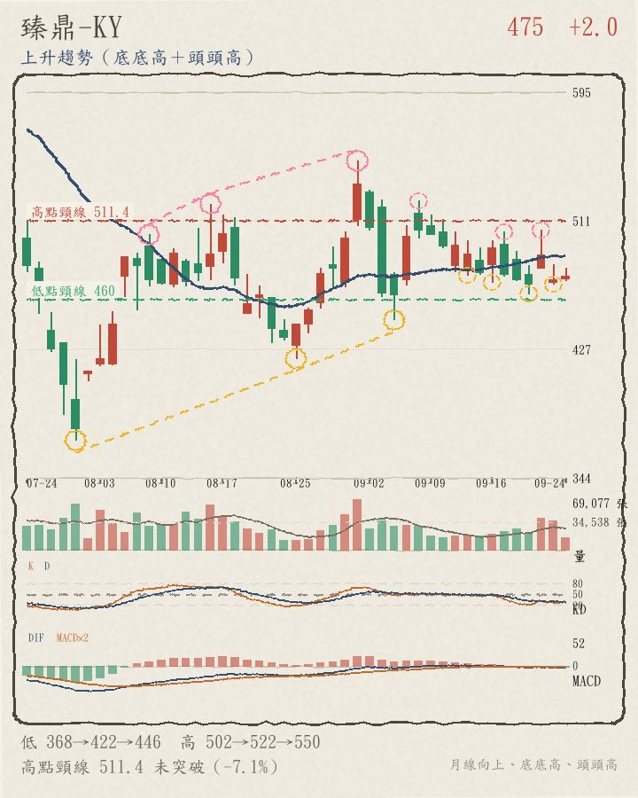
12:49 盤中 475（+0.42%），比加權指數強 0.96 個百分點、跌破月線 488.275，離高點頸線 511.4 還差 7.1%，轉折結構仍是底底高＋頭頭高。
- 月線位置：現價 475 在月線 488.275 之下（-2.7%）；5 日線 476.2 也在月線之下（短均在下）；月線向上
- 量能：以已過交易時間推估，今天成交量約是 20 日均量的 0.64 倍（量縮），比 20 日均量少很多；上漲但量縮，量價背離
- 關鍵價位：高點頸線 511.4 還沒突破，差 7.1%；前一交易日高點 482.5（低於 1.6%）；今天盤中高點 480.5（低於 1.1%）；今天盤中低點 472（高於 0.6%）
- 轉折結構：低點 368、421.5、446.5 一路墊高、高點 502、522、550 也一路墊高，是底底高＋頭頭高；還沒確認的轉折低點 09-21 463.5、09-23 470；還沒確認的轉折高點 09-17 504、09-22 505（圖上虛線小圈）
晶技 3042 上市
199 +1.0（+0.51%）
高點墊高、底部不穩 盤中成交值 73.87 億・全榜第 26 名（上市第 22 名）・相對大盤 +1.05
好條件 5/8：站上月線、月線向上、頭頭高、相對大盤強、攻擊量（量增＋上漲）
不好條件 0/8：無
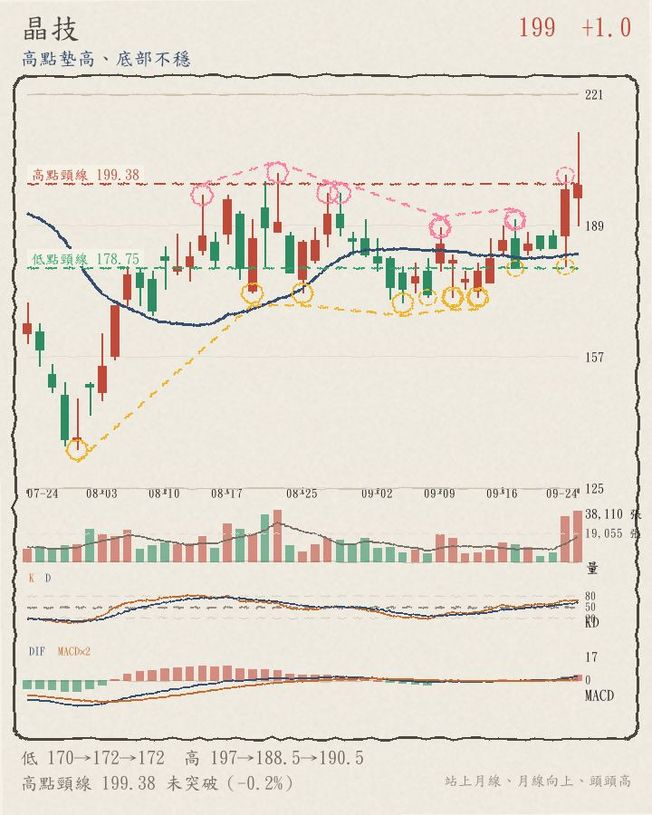
12:49 盤中 199（+0.51%），比加權指數強 1.05 個百分點、站上月線 181.875，離高點頸線 199.38 還差 0.2%，高點還在墊高（但底部沒同步墊高）。
- 月線位置：現價 199 在月線 181.875 之上（+9.4%）；5 日線 185.6 也在月線之上（短均在上）；月線向上
- 量能：以已過交易時間推估，今天成交量約是 20 日均量的 3.97 倍（爆量），比 20 日均量大不少；上漲又量增，量價配合
- 關鍵價位：高點頸線 199.38 還沒突破，差 0.2%；前一交易日高點 201.5（低於 1.2%）；今天盤中高點 212（低於 6.1%）；今天盤中低點 189（高於 5.3%）
- 轉折結構：高點 197、188.5、190.5 墊高（頭頭高），但低點 170、171.5、171.5 沒有同步墊高；還沒確認的轉折低點 09-17 178.5、09-23 179；還沒確認的轉折高點 09-17 190.5、09-23 201.5（圖上虛線小圈）
環球晶 6488 上櫃
940 -10.0（-1.05%）
區間或轉弱 盤中成交值 68.93 億・全榜第 27 名（上櫃第 5 名）・相對大盤 -0.51
好條件 0/8：無
不好條件 4/8：今日下跌、相對大盤弱、在月線之下、月線下彎
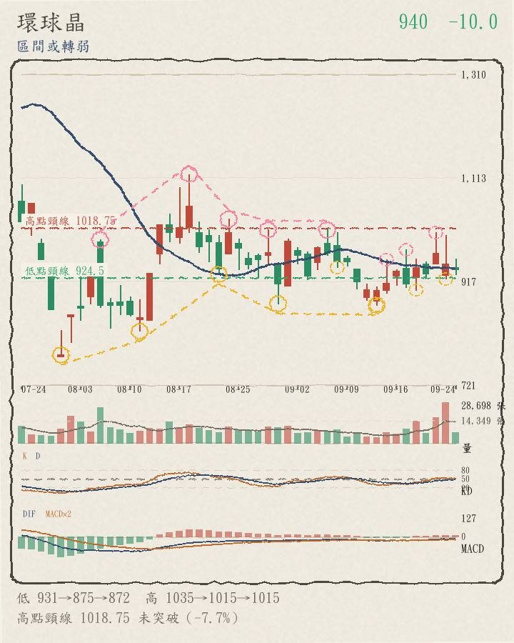
12:49 盤中 940（-1.05%），比加權指數弱 0.51 個百分點、跌破月線 943.5，離高點頸線 1018.75 還差 7.7%，轉折還沒走出明顯方向。
- 月線位置：現價 940 在月線 943.5 之下（-0.4%）；5 日線 941.6 也在月線之下（短均在下）；月線向下
- 量能：以已過交易時間推估，今天成交量約是 20 日均量的 0.99 倍（量平），跟 20 日均量差不多
- 關鍵價位：高點頸線 1018.75 還沒突破，差 7.7%；前一交易日高點 1005（低於 6.5%）；今天盤中高點 960（低於 2.1%）；今天盤中低點 930（高於 1.1%）
- 轉折結構：低點 931、875、872 與高點 1035、1015、1015 都沒有明顯遞增，屬於區間震盪或轉弱；還沒確認的轉折低點 09-18 901、09-23 922；還沒確認的轉折高點 09-17 977、09-22 1010（圖上虛線小圈）
量平
↑ 回上方清單
大量 3167 上市
949 +59.0（+6.63%）
上升趨勢（底底高＋頭頭高） 盤中成交值 68.08 億・全榜第 28 名（上市第 23 名）・相對大盤 +7.17
好條件 7/8：站上月線、月線向上、底底高、頭頭高、突破頸線、相對大盤強、攻擊量（量增＋上漲）
不好條件 0/8：無
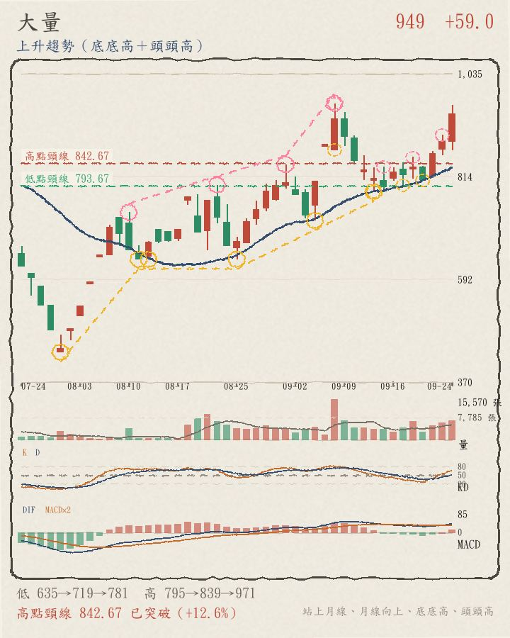
12:49 盤中 949（+6.63%），比加權指數強 7.17 個百分點、站上月線 823，已突破高點頸線 842.67，轉折結構仍是底底高＋頭頭高。
- 月線位置：現價 949 在月線 823 之上（+15.3%）；5 日線 842.2 也在月線之上（短均在上）；月線向上
- 量能：以已過交易時間推估，今天成交量約是 20 日均量的 1.74 倍（爆量），比 20 日均量大不少；上漲又量增，量價配合
- 關鍵價位：高點頸線 842.67 已站上；前一交易日高點 903（高於 5.1%）；今天盤中高點 968（低於 2.0%）；今天盤中低點 871（高於 9.0%）
- 轉折結構：低點 635、719、781 一路墊高、高點 795、839、971 也一路墊高，是底底高＋頭頭高；還沒確認的轉折低點 09-17 795、09-21 805；還沒確認的轉折高點 09-18 855、09-23 903（圖上虛線小圈）
鴻海 2317 上市
251 -5.0（-1.95%）
區間或轉弱 盤中成交值 66.83 億・全榜第 29 名（上市第 24 名）・相對大盤 -1.41
好條件 2/8：月線向上、守住今日高檔（距今日高點 1% 內）
不好條件 5/8：今日下跌、相對大盤弱、在月線之下、貼近今日低點（1% 內）、跌破昨日低點
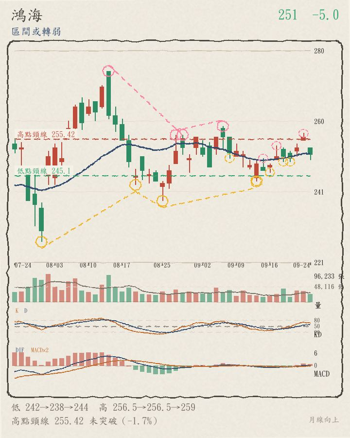
12:49 盤中 251（-1.95%），比加權指數弱 1.41 個百分點、跌破月線 251.35，離高點頸線 255.42 還差 1.7%，轉折還沒走出明顯方向。
- 月線位置：現價 251 在月線 251.35 之下（-0.1%）；5 日線 252 也在月線之上（短均在上）；月線向上
- 量能：以已過交易時間推估，今天成交量約是 20 日均量的 1.05 倍（量平），比 20 日均量大一些
- 關鍵價位：高點頸線 255.42 還沒突破，差 1.7%；前一交易日高點 257（低於 2.3%）；今天盤中高點 253（低於 0.8%）；今天盤中低點 249.5（高於 0.6%）
- 轉折結構：低點 242.5、238、243.5 與高點 256.5、256.5、259 都沒有明顯遞增，屬於區間震盪或轉弱；還沒確認的轉折低點 09-18 249、09-21 249；還沒確認的轉折高點 09-17 253.5、09-23 257（圖上虛線小圈）
京元電子 2449 上市
307 +3.0（+0.99%）
高點墊高、底部不穩 盤中成交值 65.71 億・全榜第 30 名（上市第 25 名）・相對大盤 +1.53
好條件 5/8：站上月線、月線向上、頭頭高、突破頸線、相對大盤強
不好條件 0/8：無
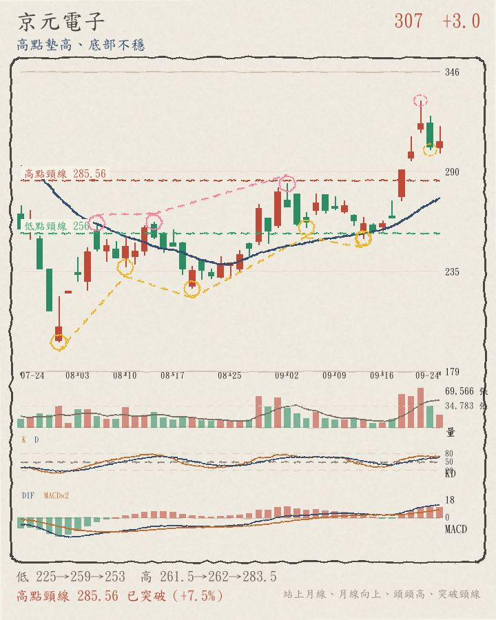
12:49 盤中 307（+0.99%），比加權指數強 1.53 個百分點、站上月線 272.6，已突破高點頸線 285.56，高點還在墊高（但底部沒同步墊高）。
- 月線位置：現價 307 在月線 272.6 之上（+12.6%）；5 日線 295.8 也在月線之上（短均在上）；月線向上
- 量能：以已過交易時間推估，今天成交量約是 20 日均量的 0.93 倍（量平），比 20 日均量少一些
- 關鍵價位：高點頸線 285.56 已站上；前一交易日高點 321.5（低於 4.5%）；今天盤中高點 315.5（低於 2.7%）；今天盤中低點 300.5（高於 2.2%）
- 轉折結構：高點 261.5、262、283.5 墊高（頭頭高），但低點 225、259、253 沒有同步墊高；還沒確認的轉折低點 09-14 253、09-23 302.5；還沒確認的轉折高點 09-22 330（圖上虛線小圈）
群聯 8299 上櫃
2105 -110.0（-4.97%）
高點墊高、底部不穩 盤中成交值 65.19 億・全榜第 31 名（上櫃第 6 名）・相對大盤 -4.43
好條件 3/8：站上月線、月線向上、頭頭高
不好條件 4/8：今日下跌、相對大盤弱、貼近今日低點（1% 內）、跌破昨日低點
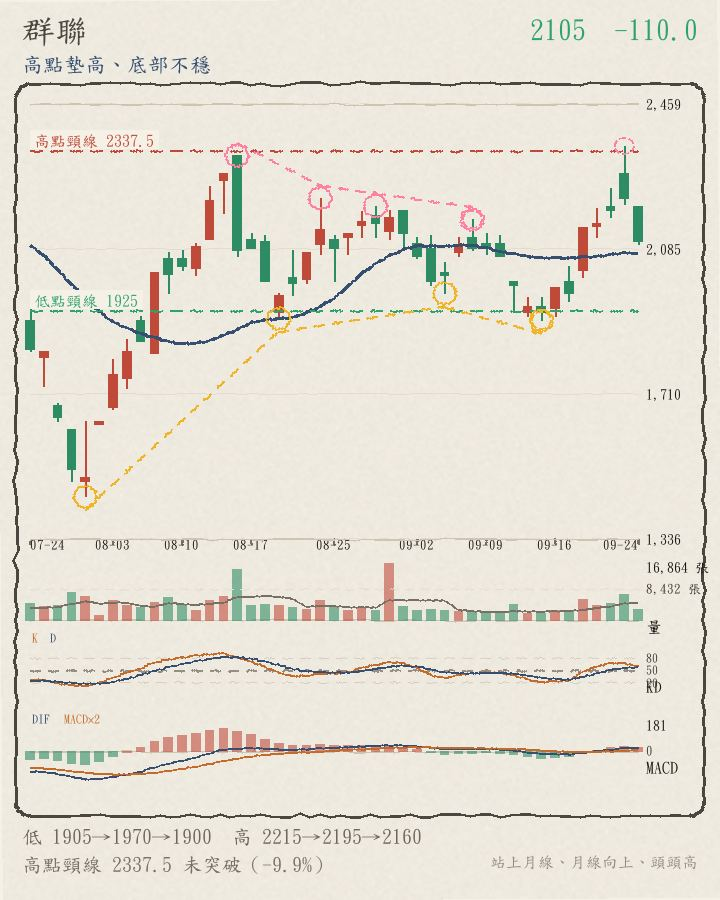
12:49 盤中 2105（-4.97%），比加權指數弱 4.43 個百分點、站上月線 2074.75，離高點頸線 2337.5 還差 9.9%，高點還在墊高（但底部沒同步墊高）。
- 月線位置：現價 2105 在月線 2074.75 之上（+1.5%）；5 日線 2132 也在月線之上（短均在上）；月線向上
- 量能：以已過交易時間推估，今天成交量約是 20 日均量的 0.94 倍（量平），比 20 日均量少一些
- 關鍵價位：高點頸線 2337.5 還沒突破，差 9.9%；前一交易日高點 2350（低於 10.4%）；今天盤中高點 2195（低於 4.1%）；今天盤中低點 2095（高於 0.5%）
- 轉折結構：高點 2215、2195、2160 墊高（頭頭高），但低點 1905、1970、1900 沒有同步墊高；還沒確認的轉折低點 09-15 1900；還沒確認的轉折高點 09-08 2160、09-23 2350（圖上虛線小圈）
華邦電 2344 上市
169 -3.5（-2.03%）
區間或轉弱 盤中成交值 62.62 億・全榜第 32 名（上市第 26 名）・相對大盤 -1.49
好條件 1/8：守住今日高檔（距今日高點 1% 內）
不好條件 5/8：今日下跌、相對大盤弱、在月線之下、跌破昨日低點、月線下彎
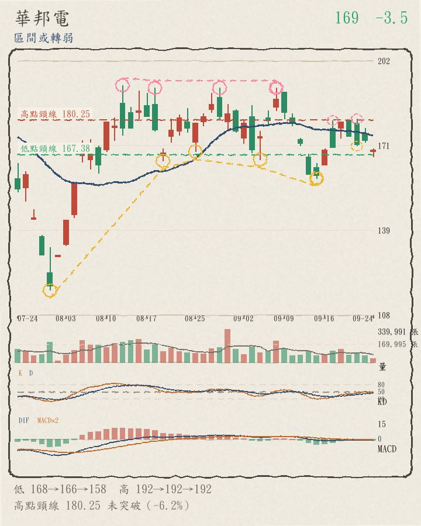
12:49 盤中 169（-2.03%），比加權指數弱 1.49 個百分點、跌破月線 175.275，離高點頸線 180.25 還差 6.2%，轉折還沒走出明顯方向。
- 月線位置：現價 169 在月線 175.275 之下（-3.6%）；5 日線 173.4 也在月線之下（短均在下）；月線向下
- 量能：以已過交易時間推估，今天成交量約是 20 日均量的 0.35 倍（量縮），比 20 日均量少很多
- 關鍵價位：高點頸線 180.25 還沒突破，差 6.2%；前一交易日高點 177（低於 4.5%）；今天盤中高點 169.5（低於 0.3%）；今天盤中低點 166.5（高於 1.5%）
- 轉折結構：低點 168.5、165.5、158.5 與高點 192、192、192 都沒有明顯遞增，屬於區間震盪或轉弱；還沒確認的轉折低點 09-15 158.5、09-22 170.5；還沒確認的轉折高點 09-17 180、09-22 180.5（圖上虛線小圈）
量縮
↑ 回上方清單
光頡 3624 上櫃
138 +4.0（+2.99%）
上升趨勢（底底高＋頭頭高） 盤中成交值 62.26 億・全榜第 33 名（上櫃第 7 名）・相對大盤 +3.53
好條件 7/8：站上月線、月線向上、底底高、頭頭高、突破頸線、相對大盤強、攻擊量（量增＋上漲）
不好條件 0/8：無
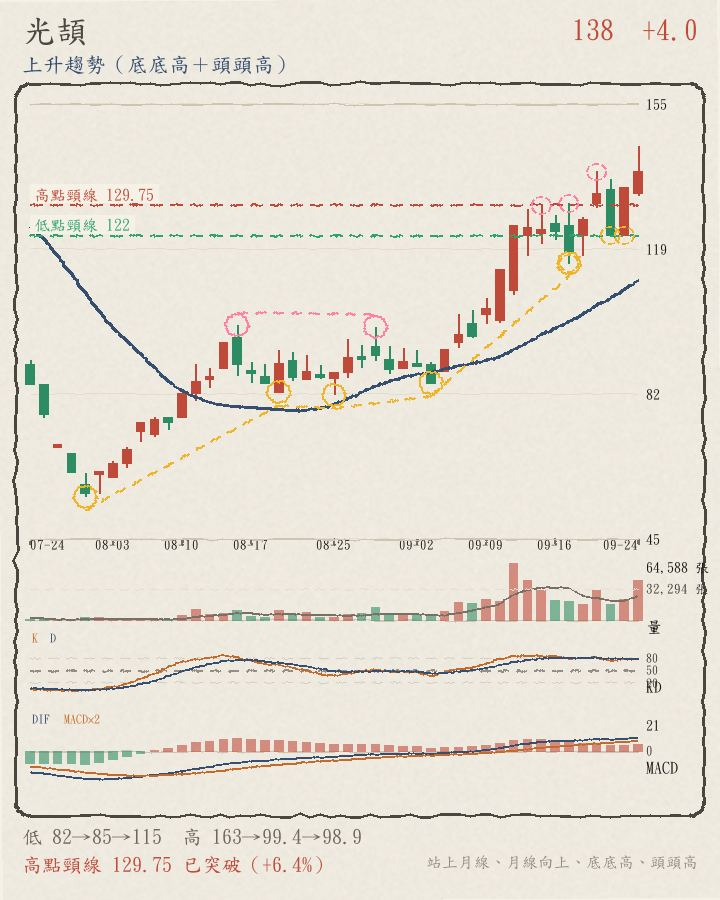
12:49 盤中 138（+2.99%），比加權指數強 3.53 個百分點、站上月線 108.31，已突破高點頸線 129.75，轉折結構仍是底底高＋頭頭高。
- 月線位置：現價 138 在月線 108.31 之上（+27.4%）；5 日線 126.5 也在月線之上（短均在上）；月線向上
- 量能：以已過交易時間推估，今天成交量約是 20 日均量的 2.70 倍（爆量），比 20 日均量大不少；上漲又量增，量價配合
- 關鍵價位：高點頸線 129.75 已站上；前一交易日高點 134（高於 3.0%）；今天盤中高點 144.5（低於 4.5%）；今天盤中低點 132（高於 4.5%）
- 轉折結構：低點 81.8、84.8、115 一路墊高、高點 163、99.4、98.9 也一路墊高，是底底高＋頭頭高；還沒確認的轉折低點 09-22 122、09-23 122；還沒確認的轉折高點 09-17 130、09-21 138（圖上虛線小圈）
奇鋐 3017 上市
3535 +65.0（+1.87%）
高點墊高、底部不穩 盤中成交值 59.28 億・全榜第 34 名（上市第 27 名）・相對大盤 +2.41
好條件 4/8：站上月線、月線向上、頭頭高、相對大盤強
不好條件 0/8：無
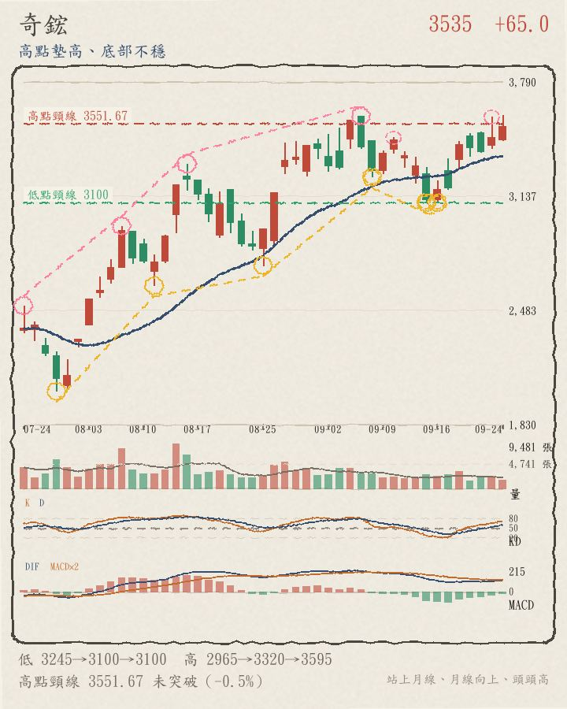
12:49 盤中 3535（+1.87%），比加權指數強 2.41 個百分點、站上月線 3356，離高點頸線 3551.67 還差 0.5%，高點還在墊高（但底部沒同步墊高）。
- 月線位置：現價 3535 在月線 3356 之上（+5.3%）；5 日線 3378 也在月線之上（短均在上）；月線向上
- 量能：以已過交易時間推估，今天成交量約是 20 日均量的 0.62 倍（量縮），比 20 日均量少很多；上漲但量縮，量價背離
- 關鍵價位：高點頸線 3551.67 還沒突破，差 0.5%；前一交易日高點 3590（低於 1.5%）；今天盤中高點 3600（低於 1.8%）；今天盤中低點 3455（高於 2.3%）
- 轉折結構：高點 2965、3320、3595 墊高（頭頭高），但低點 3245、3100、3100 沒有同步墊高；還沒確認的轉折低點 09-15 3100、09-16 3100；還沒確認的轉折高點 09-10 3470、09-23 3590（圖上虛線小圈）
大立光 3008 上市
6190 +0.0（+0.00%）
高點墊高、底部不穩 盤中成交值 55.15 億・全榜第 35 名（上市第 28 名）・相對大盤 +0.54
好條件 3/8：月線向上、頭頭高、相對大盤強
不好條件 1/8：在月線之下
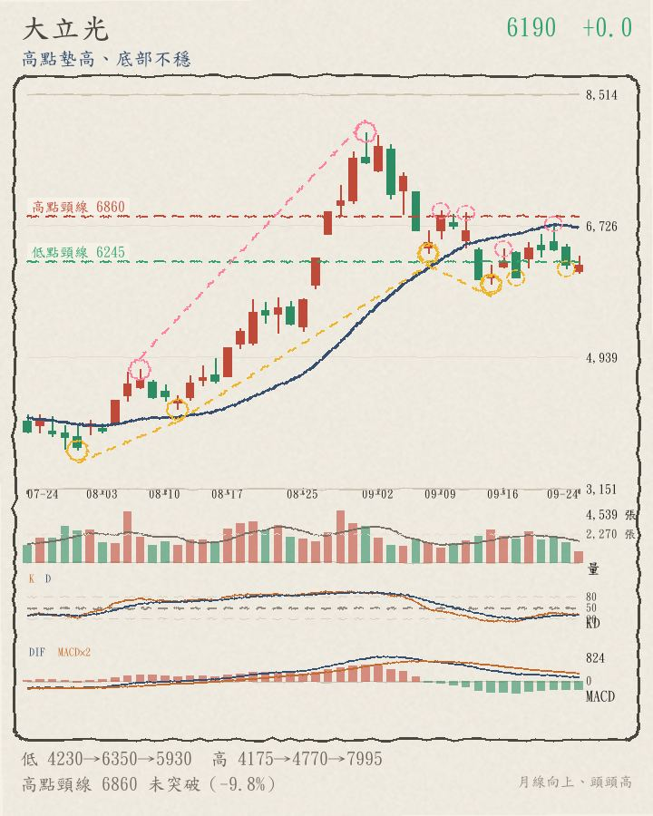
12:49 盤中 6190（+0.00%），比加權指數強 0.54 個百分點、跌破月線 6735，離高點頸線 6860 還差 9.8%，高點還在墊高（但底部沒同步墊高）。
- 月線位置：現價 6190 在月線 6735 之下（-8.1%）；5 日線 6289 也在月線之下（短均在下）；月線向上
- 量能：以已過交易時間推估，今天成交量約是 20 日均量的 0.46 倍（量縮），比 20 日均量少很多
- 關鍵價位：高點頸線 6860 還沒突破，差 9.8%；前一交易日高點 6470（低於 4.3%）；今天盤中高點 6310（低於 1.9%）；今天盤中低點 6080（高於 1.8%）
- 轉折結構：高點 4175、4770、7995 墊高（頭頭高），但低點 4230、6350、5930 沒有同步墊高；還沒確認的轉折低點 09-17 6020、09-23 6140；還沒確認的轉折高點 09-16 6415、09-22 6750（圖上虛線小圈）
強茂 2481 上市
174 +1.0（+0.58%）
高點墊高、底部不穩 盤中成交值 54.56 億・全榜第 36 名（上市第 29 名）・相對大盤 +1.12
好條件 5/8：站上月線、月線向上、頭頭高、突破頸線、相對大盤強
不好條件 0/8：無
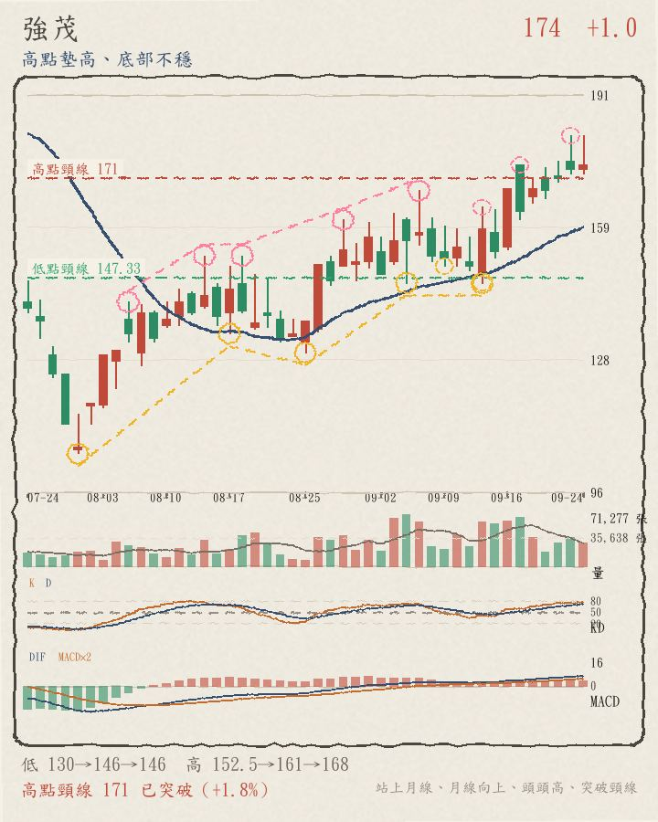
12:49 盤中 174（+0.58%），比加權指數強 1.12 個百分點、站上月線 158，已突破高點頸線 171，高點還在墊高（但底部沒同步墊高）。
- 月線位置：現價 174 在月線 158 之上（+10.1%）；5 日線 168.7 也在月線之上（短均在上）；月線向上
- 量能：以已過交易時間推估，今天成交量約是 20 日均量的 0.87 倍（量平），比 20 日均量少一些
- 關鍵價位：高點頸線 171 已站上；前一交易日高點 181（低於 3.9%）；今天盤中高點 181（低於 3.9%）；今天盤中低點 172（高於 1.2%）
- 轉折結構：高點 152.5、161、168 墊高（頭頭高），但低點 129.5、146、146 沒有同步墊高；還沒確認的轉折低點 09-09 150、09-14 146；還沒確認的轉折高點 09-17 174、09-23 181（圖上虛線小圈）
力積電 6770 上市
70.9 -2.2（-3.01%）
高點墊高、底部不穩 盤中成交值 52.34 億・全榜第 37 名（上市第 30 名）・相對大盤 -2.47
好條件 2/8：月線向上、頭頭高
不好條件 5/8：今日下跌、相對大盤弱、在月線之下、貼近今日低點（1% 內）、跌破昨日低點
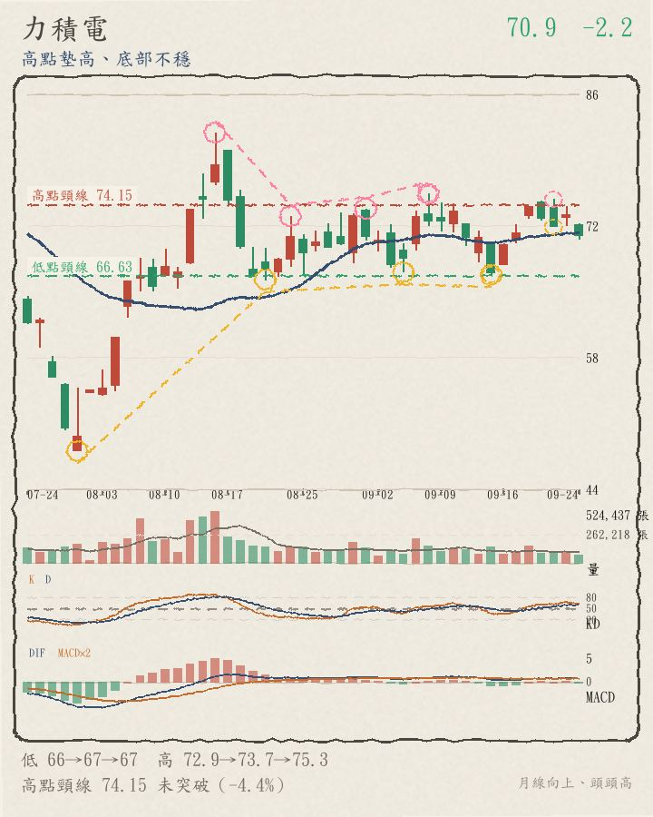
12:49 盤中 70.9（-3.01%），比加權指數弱 2.47 個百分點、跌破月線 71.115，離高點頸線 74.15 還差 4.4%，高點還在墊高（但底部沒同步墊高）。
- 月線位置：現價 70.9 在月線 71.115 之下（-0.3%）；5 日線 72.56 也在月線之上（短均在上）；月線向上
- 量能：以已過交易時間推估，今天成交量約是 20 日均量的 0.67 倍（量縮），比 20 日均量少很多
- 關鍵價位：高點頸線 74.15 還沒突破，差 4.4%；前一交易日高點 74（低於 4.2%）；今天盤中高點 72.1（低於 1.7%）；今天盤中低點 70.5（高於 0.6%）
- 轉折結構：高點 72.9、73.7、75.3 墊高（頭頭高），但低點 66.2、67、66.7 沒有同步墊高；還沒確認的轉折低點 09-15 66.7、09-22 71.8；還沒確認的轉折高點 09-08 75.3、09-22 74.7（圖上虛線小圈）
日月光投控 3711 上市
691 -2.0（-0.29%）
上升趨勢（底底高＋頭頭高） 盤中成交值 51.09 億・全榜第 38 名（上市第 31 名）・相對大盤 +0.25
好條件 6/8：站上月線、月線向上、底底高、頭頭高、相對大盤強、守住今日高檔（距今日高點 1% 內）
不好條件 1/8：今日下跌
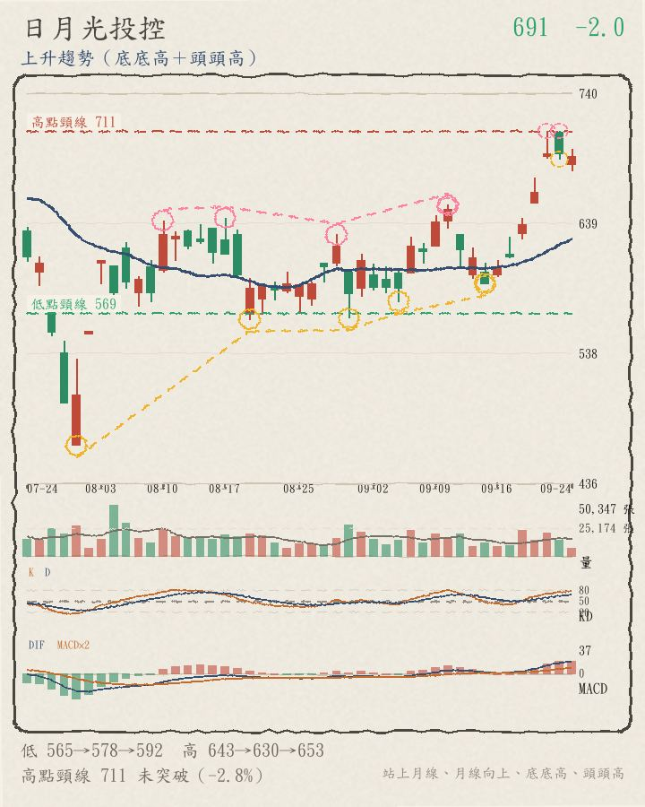
12:49 盤中 691（-0.29%），比加權指數強 0.25 個百分點、站上月線 622.15，離高點頸線 711 還差 2.8%，轉折結構仍是底底高＋頭頭高。
- 月線位置：現價 691 在月線 622.15 之上（+11.1%）；5 日線 660.2 也在月線之上（短均在上）；月線向上
- 量能：以已過交易時間推估，今天成交量約是 20 日均量的 0.51 倍（量縮），比 20 日均量少很多
- 關鍵價位：高點頸線 711 還沒突破，差 2.8%；前一交易日高點 711（低於 2.8%）；今天盤中高點 697（低於 0.9%）；今天盤中低點 680（高於 1.6%）
- 轉折結構：低點 565、578、592 一路墊高、高點 643、630、653 也一路墊高，是底底高＋頭頭高；還沒確認的轉折低點 09-15 592、09-23 689；還沒確認的轉折高點 09-22 711、09-23 711（圖上虛線小圈）
中華化 1727 上市
111 -5.5（-4.72%）
高點墊高、底部不穩 盤中成交值 47.09 億・全榜第 39 名（上市第 32 名）・相對大盤 -4.18
好條件 4/8：站上月線、月線向上、頭頭高、突破頸線
不好條件 3/8：今日下跌、相對大盤弱、量增下跌（出貨）
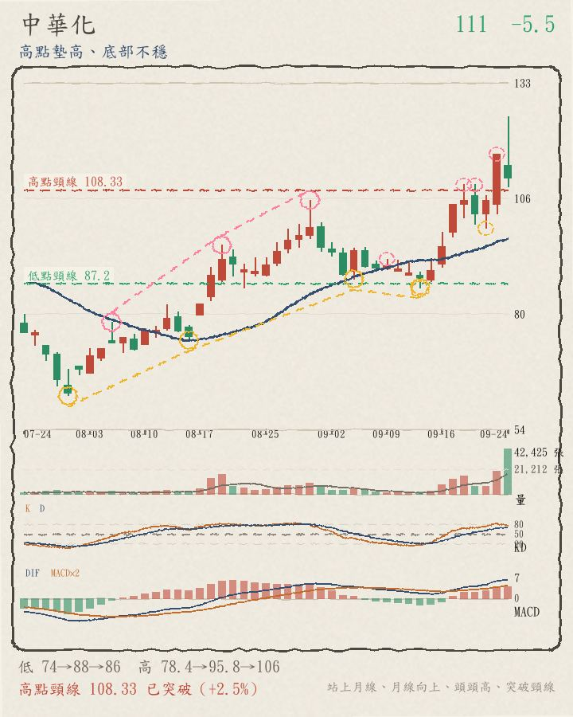
12:49 盤中 111（-4.72%），比加權指數弱 4.18 個百分點、站上月線 96.57，已突破高點頸線 108.33，高點還在墊高（但底部沒同步墊高）。
- 月線位置：現價 111 在月線 96.57 之上（+14.9%）；5 日線 107.3 也在月線之上（短均在上）；月線向上
- 量能：以已過交易時間推估，今天成交量約是 20 日均量的 8.39 倍（爆量），比 20 日均量大不少；下跌卻量增，量價背離
- 關鍵價位：高點頸線 108.33 已站上；前一交易日高點 116.5（低於 4.7%）；今天盤中高點 125（低於 11.2%）；今天盤中低點 109（高於 1.8%）
- 轉折結構：高點 78.4、95.8、106 墊高（頭頭高），但低點 74.3、88.2、86.2 沒有同步墊高；還沒確認的轉折低點 09-14 86.2、09-22 99.6；還沒確認的轉折高點 09-21 109.5、09-23 116.5（圖上虛線小圈）
精材 3374 上櫃
445.5 -26.5（-5.61%）
高點墊高、底部不穩 盤中成交值 47.08 億・全榜第 40 名（上櫃第 8 名）・相對大盤 -5.07
好條件 3/8：站上月線、月線向上、頭頭高
不好條件 4/8：今日下跌、相對大盤弱、貼近今日低點（1% 內）、跌破昨日低點
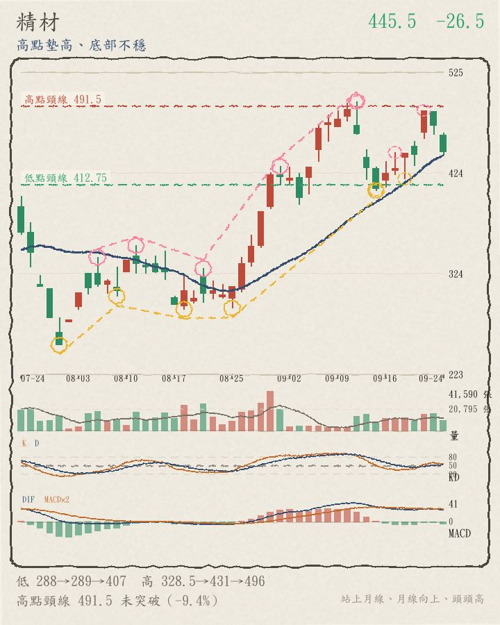
12:49 盤中 445.5（-5.61%），比加權指數弱 5.07 個百分點、站上月線 437.125，離高點頸線 491.5 還差 9.4%，高點還在墊高（但底部沒同步墊高）。
- 月線位置：現價 445.5 在月線 437.125 之上（+1.9%）；5 日線 455.1 也在月線之上（短均在上）；月線向上
- 量能：以已過交易時間推估，今天成交量約是 20 日均量的 0.94 倍（量平），比 20 日均量少一些
- 關鍵價位：高點頸線 491.5 還沒突破，差 9.4%；前一交易日高點 486（低於 8.3%）；今天盤中高點 464.5（低於 4.1%）；今天盤中低點 442（高於 0.8%）
- 轉折結構：高點 328.5、431、496 墊高（頭頭高），但低點 288、289、407 沒有同步墊高；還沒確認的轉折低點 09-15 407、09-18 418.5；還沒確認的轉折高點 09-17 445、09-22 487（圖上虛線小圈）
騰輝電子-KY 6672 上市
335.5 +28.5（+9.28%）
底部墊高、未過前高 盤中成交值 46.03 億・全榜第 41 名（上市第 33 名）・相對大盤 +9.82
好條件 7/8：站上月線、月線向上、底底高、突破頸線、相對大盤強、攻擊量（量增＋上漲）、守住今日高檔（距今日高點 1% 內）
不好條件 0/8：無
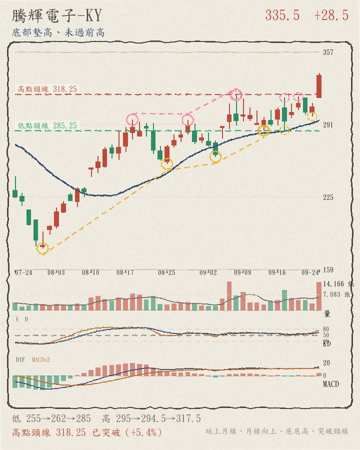
12:49 盤中 335.5（+9.28%），比加權指數強 9.82 個百分點、站上月線 291.825，已突破高點頸線 318.25，底部還在墊高（但高點沒同步創高）。
- 月線位置：現價 335.5 在月線 291.825 之上（+15.0%）；5 日線 302.9 也在月線之上（短均在上）；月線向上
- 量能：以已過交易時間推估，今天成交量約是 20 日均量的 3.24 倍（爆量），比 20 日均量大不少；上漲又量增，量價配合
- 關鍵價位：高點頸線 318.25 已站上；前一交易日高點 310（高於 8.2%）；今天盤中高點 337.5（低於 0.6%）；今天盤中低點 315（高於 6.5%）
- 轉折結構：低點 255、261.5、285 墊高（底底高），但高點 295、294.5、317.5 沒有同步創高；還沒確認的轉折低點 09-17 285.5、09-23 298；還沒確認的轉折高點 09-17 315、09-21 316（圖上虛線小圈）
鴻勁 7769 上市
5660 -315.0（-5.27%）
區間或轉弱 盤中成交值 42 億・全榜第 42 名（上市第 34 名）・相對大盤 -4.73
好條件 0/8：無
不好條件 6/8：今日下跌、相對大盤弱、在月線之下、貼近今日低點（1% 內）、跌破昨日低點、月線下彎
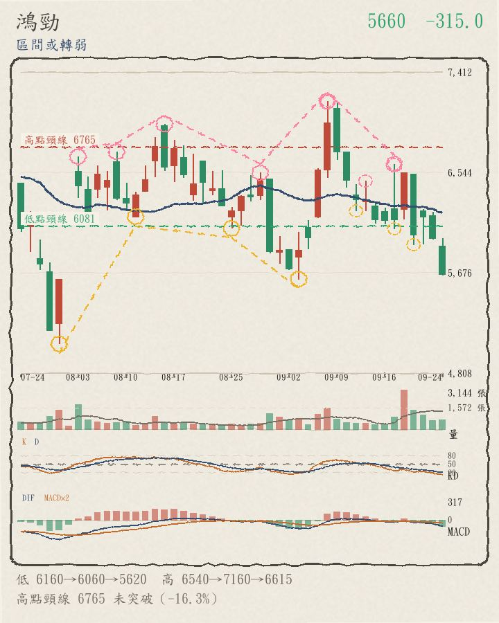
12:49 盤中 5660（-5.27%），比加權指數弱 4.73 個百分點、跌破月線 6226.75，離高點頸線 6765 還差 16.3%，轉折還沒走出明顯方向。
- 月線位置：現價 5660 在月線 6226.75 之下（-9.1%）；5 日線 6161 也在月線之下（短均在下）；月線向下
- 量能：以已過交易時間推估，今天成交量約是 20 日均量的 0.96 倍（量平），跟 20 日均量差不多
- 關鍵價位：高點頸線 6765 還沒突破，差 16.3%；前一交易日高點 6200（低於 8.7%）；今天盤中高點 5975（低於 5.3%）；今天盤中低點 5655（高於 0.1%）
- 轉折結構：低點 6160、6060、5620 與高點 6540、7160、6615 都沒有明顯遞增，屬於區間震盪或轉弱；還沒確認的轉折低點 09-17 6055、09-21 5920；還沒確認的轉折高點 09-14 6470、09-17 6615（圖上虛線小圈）
量平
↑ 回上方清單
力旺 3529 上櫃
3205 -100.0（-3.03%）
上升趨勢（底底高＋頭頭高） 盤中成交值 41.63 億・全榜第 43 名（上櫃第 9 名）・相對大盤 -2.49
好條件 5/8：站上月線、月線向上、底底高、頭頭高、突破頸線
不好條件 2/8：今日下跌、相對大盤弱
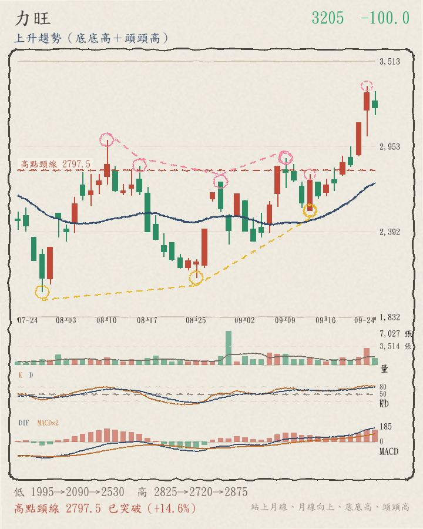
12:49 盤中 3205（-3.03%），比加權指數弱 2.49 個百分點、站上月線 2684，已突破高點頸線 2797.5，轉折結構仍是底底高＋頭頭高。
- 月線位置：現價 3205 在月線 2684 之上（+19.4%）；5 日線 2960 也在月線之上（短均在上）；月線向上
- 量能：以已過交易時間推估，今天成交量約是 20 日均量的 0.99 倍（量平），跟 20 日均量差不多
- 關鍵價位：高點頸線 2797.5 已站上；前一交易日高點 3350（低於 4.3%）；今天盤中高點 3315（低於 3.3%）；今天盤中低點 3160（高於 1.4%）
- 轉折結構：低點 1995、2090、2530 一路墊高、高點 2825、2720、2875 也一路墊高，是底底高＋頭頭高；還沒確認的轉折低點 09-14 2530；還沒確認的轉折高點 09-14 2770、09-23 3350（圖上虛線小圈）
川湖 2059 上市
12320 -70.0（-0.56%）
區間或轉弱 盤中成交值 41.52 億・全榜第 44 名（上市第 35 名）・相對大盤 -0.02
好條件 0/8：無
不好條件 4/8：今日下跌、相對大盤弱、在月線之下、月線下彎
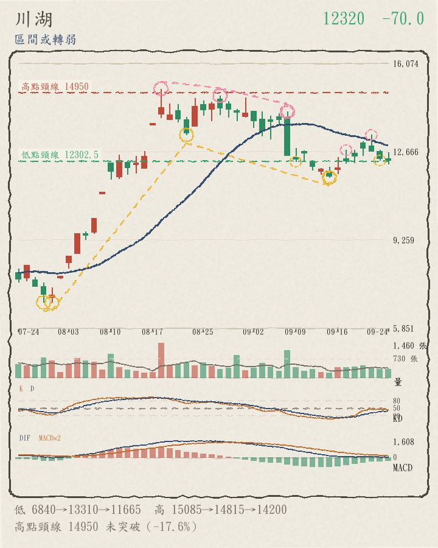
12:49 盤中 12320（-0.56%），比加權指數弱 0.02 個百分點、跌破月線 13002.5，離高點頸線 14950 還差 17.6%，轉折還沒走出明顯方向。
- 月線位置：現價 12320 在月線 13002.5 之下（-5.2%）；5 日線 12530 也在月線之下（短均在下）；月線向下
- 量能：以已過交易時間推估，今天成交量約是 20 日均量的 0.89 倍（量平），比 20 日均量少一些
- 關鍵價位：高點頸線 14950 還沒突破，差 17.6%；前一交易日高點 12725（低於 3.2%）；今天盤中高點 12640（低於 2.5%）；今天盤中低點 12185（高於 1.1%）
- 轉折結構：低點 6840、13310、11665 與高點 15085、14815、14200 都沒有明顯遞增，屬於區間震盪或轉弱；還沒確認的轉折低點 09-15 11665、09-23 12320；還沒確認的轉折高點 09-17 12730、09-22 13305（圖上虛線小圈）
量平
↑ 回上方清單
華星光 4979 上櫃
560 -30.0（-5.08%）
區間或轉弱 盤中成交值 39.48 億・全榜第 45 名（上櫃第 10 名）・相對大盤 -4.54
好條件 1/8：月線向上
不好條件 5/8：今日下跌、相對大盤弱、在月線之下、貼近今日低點（1% 內）、跌破昨日低點
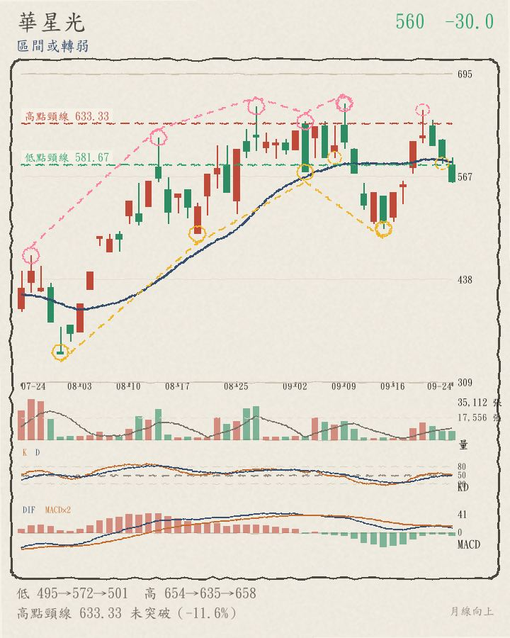
12:49 盤中 560（-5.08%），比加權指數弱 4.54 個百分點、跌破月線 587.55，離高點頸線 633.33 還差 11.6%，轉折還沒走出明顯方向。
- 月線位置：現價 560 在月線 587.55 之下（-4.7%）；5 日線 596 也在月線之上（短均在上）；月線向上
- 量能：以已過交易時間推估，今天成交量約是 20 日均量的 0.92 倍（量平），比 20 日均量少一些
- 關鍵價位：高點頸線 633.33 還沒突破，差 11.6%；前一交易日高點 613（低於 8.6%）；今天盤中高點 590（低於 5.1%）；今天盤中低點 559（高於 0.2%）
- 轉折結構：低點 495、572、501 與高點 654、635、658 都沒有明顯遞增，屬於區間震盪或轉弱；還沒確認的轉折低點 09-15 501、09-23 583；還沒確認的轉折高點 09-09 658、09-21 650（圖上虛線小圈）
群創 3481 上市
49.5 -0.1（-0.20%）
高點墊高、底部不穩 盤中成交值 39.42 億・全榜第 46 名（上市第 36 名）・相對大盤 +0.34
好條件 4/8：站上月線、月線向上、頭頭高、相對大盤強
不好條件 1/8：今日下跌
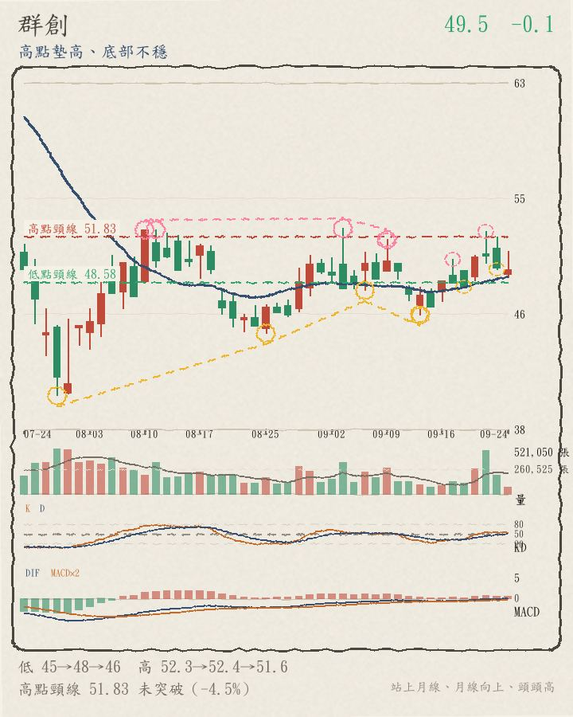
12:49 盤中 49.5（-0.20%），比加權指數強 0.34 個百分點、站上月線 48.797，離高點頸線 51.83 還差 4.5%，高點還在墊高（但底部沒同步墊高）。
- 月線位置：現價 49.5 在月線 48.797 之上（+1.4%）；5 日線 49.45 也在月線之上（短均在上）；月線向上
- 量能：以已過交易時間推估，今天成交量約是 20 日均量的 0.47 倍（量縮），比 20 日均量少很多
- 關鍵價位：高點頸線 51.83 還沒突破，差 4.5%；前一交易日高點 51.8（低於 4.4%）；今天盤中高點 50.8（低於 2.6%）；今天盤中低點 48.9（高於 1.2%）
- 轉折結構：高點 52.3、52.4、51.6 墊高（頭頭高），但低點 44.95、48、46.25 沒有同步墊高；還沒確認的轉折低點 09-18 48.25、09-23 49.5；還沒確認的轉折高點 09-17 50.2、09-22 52.2（圖上虛線小圈）
聯亞 3081 上櫃
2675 -5.0（-0.19%）
上升趨勢（底底高＋頭頭高） 盤中成交值 38.41 億・全榜第 47 名（上櫃第 11 名）・相對大盤 +0.35
好條件 3/8：底底高、頭頭高、相對大盤強
不好條件 3/8：今日下跌、在月線之下、月線下彎
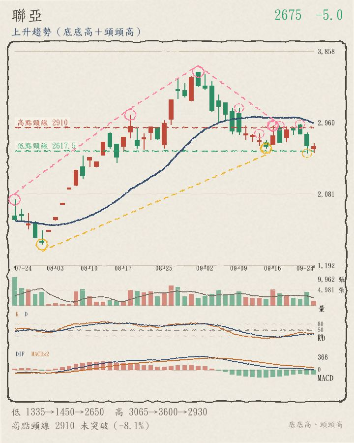
12:49 盤中 2675（-0.19%），比加權指數強 0.35 個百分點、跌破月線 2997.25，離高點頸線 2910 還差 8.1%，轉折結構仍是底底高＋頭頭高。
- 月線位置：現價 2675 在月線 2997.25 之下（-10.8%）；5 日線 2796 也在月線之下（短均在下）；月線向下
- 量能：以已過交易時間推估，今天成交量約是 20 日均量的 0.45 倍（量縮），比 20 日均量少很多
- 關鍵價位：高點頸線 2910 還沒突破，差 8.1%；前一交易日高點 2845（低於 6.0%）；今天盤中高點 2710（低於 1.3%）；今天盤中低點 2595（高於 3.1%）
- 轉折結構：低點 1335、1450、2650 一路墊高、高點 3065、3600、2930 也一路墊高，是底底高＋頭頭高；還沒確認的轉折低點 09-15 2650、09-23 2585；還沒確認的轉折高點 09-17 2930、09-22 2950（圖上虛線小圈）
緯穎 6669 上市
2090 -15.0（-0.71%）
上升趨勢（底底高＋頭頭高） 盤中成交值 38.33 億・全榜第 48 名（上市第 37 名）・相對大盤 -0.17
好條件 2/8：底底高、頭頭高
不好條件 6/8：今日下跌、相對大盤弱、在月線之下、貼近今日低點（1% 內）、跌破昨日低點、月線下彎
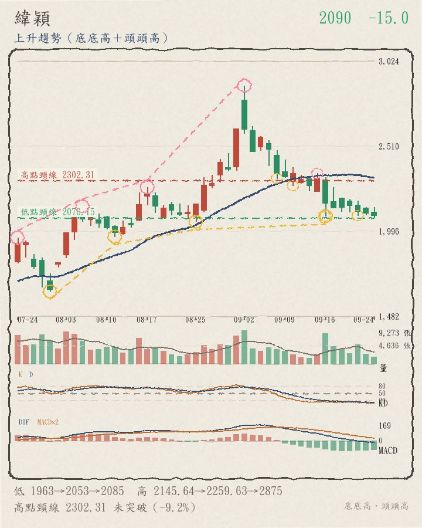
12:49 盤中 2090（-0.71%），比加權指數弱 0.17 個百分點、跌破月線 2327.36，離高點頸線 2302.31 還差 9.2%，轉折結構仍是底底高＋頭頭高。
- 月線位置：現價 2090 在月線 2327.36 之下（-10.2%）；5 日線 2129 也在月線之下（短均在下）；月線向下
- 量能：以已過交易時間推估，今天成交量約是 20 日均量的 0.48 倍（量縮），比 20 日均量少很多
- 關鍵價位：高點頸線 2302.31 還沒突破，差 9.2%；前一交易日高點 2140（低於 2.3%）；今天盤中高點 2140（低於 2.3%）；今天盤中低點 2075（高於 0.7%）
- 轉折結構：低點 1962.92、2053.44、2085 一路墊高、高點 2145.64、2259.63、2875 也一路墊高，是底底高＋頭頭高；還沒確認的轉折低點 09-16 2085、09-22 2090；還沒確認的轉折高點 09-15 2345（圖上虛線小圈）
華新科 2492 上市
311 +5.0（+1.63%）
底部墊高、未過前高 盤中成交值 37.48 億・全榜第 49 名（上市第 38 名）・相對大盤 +2.17
好條件 4/8：站上月線、月線向上、底底高、相對大盤強
不好條件 0/8：無
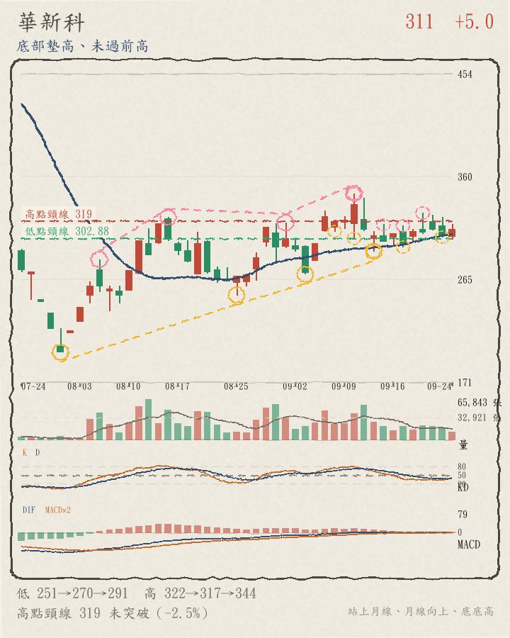
12:49 盤中 311（+1.63%），比加權指數強 2.17 個百分點、站上月線 305.525，離高點頸線 319 還差 2.5%，底部還在墊高（但高點沒同步創高）。
- 月線位置：現價 311 在月線 305.525 之上（+1.8%）；5 日線 306.4 也在月線之上（短均在上）；月線向上
- 量能：以已過交易時間推估，今天成交量約是 20 日均量的 0.48 倍（量縮），比 20 日均量少很多；上漲但量縮，量價背離
- 關鍵價位：高點頸線 319 還沒突破，差 2.5%；前一交易日高點 322.5（低於 3.6%）；今天盤中高點 315.5（低於 1.4%）；今天盤中低點 302（高於 3.0%）
- 轉折結構：低點 251、270、291 墊高（底底高），但高點 322、317、344 沒有同步創高；還沒確認的轉折低點 09-17 295、09-23 304；還沒確認的轉折高點 09-17 314.5、09-21 326（圖上虛線小圈）
緯創 3231 上市
183 +3.0（+1.67%）
底部墊高、未過前高 盤中成交值 37.14 億・全榜第 50 名（上市第 39 名）・相對大盤 +2.21
好條件 4/8：月線向上、底底高、相對大盤強、守住今日高檔（距今日高點 1% 內）
不好條件 1/8：在月線之下
12:49 盤中 183（+1.67%），比加權指數強 2.21 個百分點、跌破月線 184.95，離高點頸線 190.17 還差 3.8%，底部還在墊高（但高點沒同步創高）。
- 月線位置：現價 183 在月線 184.95 之下（-1.1%）；5 日線 184 也在月線之下（短均在下）；月線向上
- 量能：以已過交易時間推估，今天成交量約是 20 日均量的 0.45 倍（量縮），比 20 日均量少很多；上漲但量縮，量價背離
- 關鍵價位：高點頸線 190.17 還沒突破，差 3.8%；前一交易日高點 182（高於 0.5%）；今天盤中高點 184（低於 0.5%）；今天盤中低點 178（高於 2.8%）
- 轉折結構：低點 172.5、174、179.5 墊高（底底高），但高點 188、200.5、190.5 沒有同步創高；還沒確認的轉折低點 09-16 181、09-23 180；還沒確認的轉折高點 09-10 192、09-18 190.5（圖上虛線小圈）
致茂 2360 上市
2285 -40.0（-1.72%）
上升趨勢（底底高＋頭頭高） 盤中成交值 35.67 億・全榜第 51 名（上市第 40 名）・相對大盤 -1.18
好條件 4/8：站上月線、月線向上、底底高、頭頭高
不好條件 4/8：今日下跌、相對大盤弱、貼近今日低點（1% 內）、跌破昨日低點
12:49 盤中 2285（-1.72%），比加權指數弱 1.18 個百分點、站上月線 2150.25，離高點頸線 2476.67 還差 7.7%，轉折結構仍是底底高＋頭頭高。
- 月線位置：現價 2285 在月線 2150.25 之上（+6.3%）；5 日線 2303 也在月線之上（短均在上）；月線向上
- 量能：以已過交易時間推估，今天成交量約是 20 日均量的 0.87 倍（量平），比 20 日均量少一些
- 關鍵價位：高點頸線 2476.67 還沒突破，差 7.7%；前一交易日高點 2470（低於 7.5%）；今天盤中高點 2345（低於 2.6%）；今天盤中低點 2270（高於 0.7%）
- 轉折結構：低點 1845、1875、2070 一路墊高、高點 2170、2400、2490 也一路墊高，是底底高＋頭頭高；還沒確認的轉折低點 09-16 2070、09-23 2305；還沒確認的轉折高點 09-09 2490、09-22 2540（圖上虛線小圈）
智邦 2345 上市
1880 -10.0（-0.53%）
區間或轉弱 盤中成交值 35.46 億・全榜第 52 名（上市第 41 名）・相對大盤 +0.01
好條件 1/8：相對大盤強
不好條件 3/8：今日下跌、在月線之下、月線下彎
12:49 盤中 1880（-0.53%），比加權指數強 0.01 個百分點、跌破月線 1978，離高點頸線 1911.67 還差 1.7%，轉折還沒走出明顯方向。
- 月線位置：現價 1880 在月線 1978 之下（-5.0%）；5 日線 1860 也在月線之下（短均在下）；月線向下
- 量能：以已過交易時間推估，今天成交量約是 20 日均量的 0.68 倍（量縮），比 20 日均量少很多
- 關鍵價位：高點頸線 1911.67 還沒突破，差 1.7%；前一交易日高點 1955（低於 3.8%）；今天盤中高點 1905（低於 1.3%）；今天盤中低點 1855（高於 1.3%）
- 轉折結構：低點 1960、1950、1790 與高點 2595、2385、2235 都沒有明顯遞增，屬於區間震盪或轉弱；還沒確認的轉折低點 09-21 1810、09-23 1845；還沒確認的轉折高點 09-17 1885、09-23 1955（圖上虛線小圈）
量縮
↑ 回上方清單
高力 8996 上市
1520 -20.0（-1.30%）
上升趨勢（底底高＋頭頭高） 盤中成交值 35.25 億・全榜第 53 名（上市第 42 名）・相對大盤 -0.76
好條件 5/8：站上月線、月線向上、底底高、頭頭高、突破頸線
不好條件 2/8：今日下跌、相對大盤弱
12:49 盤中 1520（-1.30%），比加權指數弱 0.76 個百分點、站上月線 1315，已突破高點頸線 1337.5，轉折結構仍是底底高＋頭頭高。
- 月線位置：現價 1520 在月線 1315 之上（+15.6%）；5 日線 1486 也在月線之上（短均在上）；月線向上
- 量能：以已過交易時間推估，今天成交量約是 20 日均量的 0.68 倍（量縮），比 20 日均量少很多
- 關鍵價位：高點頸線 1337.5 已站上；前一交易日高點 1640（低於 7.3%）；今天盤中高點 1560（低於 2.6%）；今天盤中低點 1480（高於 2.7%）
- 轉折結構：低點 1070、1140、1200 一路墊高、高點 1310、1410、1365 也一路墊高，是底底高＋頭頭高；還沒確認的轉折低點 09-08 1205、09-15 1200；還沒確認的轉折高點 09-11 1365、09-22 1655（圖上虛線小圈）
欣銓 3264 上櫃
244.5 -7.5（-2.98%）
高點墊高、底部不穩 盤中成交值 34.85 億・全榜第 54 名（上櫃第 12 名）・相對大盤 -2.44
好條件 4/8：站上月線、月線向上、頭頭高、突破頸線
不好條件 4/8：今日下跌、相對大盤弱、量增下跌（出貨）、跌破昨日低點
12:49 盤中 244.5（-2.98%），比加權指數弱 2.44 個百分點、站上月線 237.95，已突破高點頸線 239.83，高點還在墊高（但底部沒同步墊高）。
- 月線位置：現價 244.5 在月線 237.95 之上（+2.8%）；5 日線 265.1 也在月線之上（短均在上）；月線向上
- 量能：以已過交易時間推估，今天成交量約是 20 日均量的 1.59 倍（爆量），比 20 日均量大不少；下跌卻量增，量價背離
- 關鍵價位：高點頸線 239.83 已站上；前一交易日高點 273.5（低於 10.6%）；今天盤中高點 255（低於 4.1%）；今天盤中低點 244.5（高於 0.0%）
- 轉折結構：高點 238、239.5、251.5 墊高（頭頭高），但低點 202、222.5、220 沒有同步墊高；還沒確認的轉折低點 09-16 220、09-23 250.5；還沒確認的轉折高點 09-10 251.5、09-22 289.5（圖上虛線小圈）
鈊象 3293 上櫃
762 +33.0（+4.53%）
高點墊高、底部不穩 盤中成交值 33.32 億・全榜第 55 名（上櫃第 13 名）・相對大盤 +5.07
好條件 6/8：站上月線、月線向上、頭頭高、突破頸線、相對大盤強、攻擊量（量增＋上漲）
不好條件 0/8：無
12:49 盤中 762（+4.53%），比加權指數強 5.07 個百分點、站上月線 711.6，已突破高點頸線 720，高點還在墊高（但底部沒同步墊高）。
- 月線位置：現價 762 在月線 711.6 之上（+7.1%）；5 日線 726.8 也在月線之上（短均在上）；月線向上
- 量能：以已過交易時間推估，今天成交量約是 20 日均量的 1.74 倍（爆量），比 20 日均量大不少；上漲又量增，量價配合
- 關鍵價位：高點頸線 720 已站上；前一交易日高點 730（高於 4.4%）；今天盤中高點 774（低於 1.6%）；今天盤中低點 734（高於 3.8%）
- 轉折結構：高點 730、714、714 墊高（頭頭高），但低點 696、700、687 沒有同步墊高；還沒確認的轉折低點 09-14 687、09-21 709；還沒確認的轉折高點 09-18 729、09-23 730（圖上虛線小圈）
達發 6526 上市
834 -6.0（-0.71%）
高點墊高、底部不穩 盤中成交值 32.13 億・全榜第 56 名（上市第 43 名）・相對大盤 -0.17
好條件 4/8：站上月線、月線向上、頭頭高、突破頸線
不好條件 3/8：今日下跌、相對大盤弱、量增下跌（出貨）
12:49 盤中 834（-0.71%），比加權指數弱 0.17 個百分點、站上月線 657.05，已突破高點頸線 643.33，高點還在墊高（但底部沒同步墊高）。
- 月線位置：現價 834 在月線 657.05 之上（+26.9%）；5 日線 729.6 也在月線之上（短均在上）；月線向上
- 量能：以已過交易時間推估，今天成交量約是 20 日均量的 4.78 倍（爆量），比 20 日均量大不少；下跌卻量增，量價背離
- 關鍵價位：高點頸線 643.33 已站上；前一交易日高點 840（低於 0.7%）；今天盤中高點 862（低於 3.2%）；今天盤中低點 818（高於 2.0%）
- 轉折結構：高點 604、656、710 墊高（頭頭高），但低點 562、620、607 沒有同步墊高；還沒確認的轉折低點 09-14 607；還沒確認的轉折高點 09-15 637、09-23 840（圖上虛線小圈）
信昌電 6173 上櫃
306.5 +4.0（+1.32%）
上升趨勢（底底高＋頭頭高） 盤中成交值 29.41 億・全榜第 57 名（上櫃第 14 名）・相對大盤 +1.86
好條件 5/8：站上月線、月線向上、底底高、頭頭高、相對大盤強
不好條件 0/8：無
12:49 盤中 306.5（+1.32%），比加權指數強 1.86 個百分點、站上月線 278.675，離高點頸線 325.67 還差 5.9%，轉折結構仍是底底高＋頭頭高。
- 月線位置：現價 306.5 在月線 278.675 之上（+10.0%）；5 日線 306.2 也在月線之上（短均在上）；月線向上
- 量能：以已過交易時間推估，今天成交量約是 20 日均量的 0.56 倍（量縮），比 20 日均量少很多；上漲但量縮，量價背離
- 關鍵價位：高點頸線 325.67 還沒突破，差 5.9%；前一交易日高點 313（低於 2.1%）；今天盤中高點 314（低於 2.4%）；今天盤中低點 300.5（高於 2.0%）
- 轉折結構：低點 189.5、190.5、265.5 一路墊高、高點 178、230、270.5 也一路墊高，是底底高＋頭頭高；還沒確認的轉折低點 09-17 295、09-22 300；還沒確認的轉折高點 09-17 325、09-22 331（圖上虛線小圈）
世芯-KY 3661 上市
3755 -5.0（-0.13%）
區間或轉弱 盤中成交值 28.05 億・全榜第 58 名（上市第 44 名）・相對大盤 +0.41
好條件 2/8：相對大盤強、守住今日高檔（距今日高點 1% 內）
不好條件 3/8：今日下跌、在月線之下、月線下彎
12:49 盤中 3755（-0.13%），比加權指數強 0.41 個百分點、跌破月線 3835，離高點頸線 4012.5 還差 6.4%，轉折還沒走出明顯方向。
- 月線位置：現價 3755 在月線 3835 之下（-2.1%）；5 日線 3595 也在月線之下（短均在下）；月線向下
- 量能：以已過交易時間推估，今天成交量約是 20 日均量的 0.37 倍（量縮），比 20 日均量少很多
- 關鍵價位：高點頸線 4012.5 還沒突破，差 6.4%；前一交易日高點 3845（低於 2.3%）；今天盤中高點 3785（低於 0.8%）；今天盤中低點 3715（高於 1.1%）
- 轉折結構：低點 2630、3585、3260 與高點 3720、4530、4350 都沒有明顯遞增，屬於區間震盪或轉弱；還沒確認的轉折低點 09-17 3260；還沒確認的轉折高點 09-10 4075、09-22 3950（圖上虛線小圈）
量縮
↑ 回上方清單
中美晶 5483 上櫃
187 +2.5（+1.36%）
高點墊高、底部不穩 盤中成交值 27.81 億・全榜第 59 名（上櫃第 15 名）・相對大盤 +1.90
好條件 6/8：站上月線、月線向上、頭頭高、相對大盤強、攻擊量（量增＋上漲）、守住今日高檔（距今日高點 1% 內）
不好條件 0/8：無
12:49 盤中 187（+1.36%），比加權指數強 1.90 個百分點、站上月線 181.825，離高點頸線 187.9 還差 0.5%，高點還在墊高（但底部沒同步墊高）。
- 月線位置：現價 187 在月線 181.825 之上（+2.9%）；5 日線 187.1 也在月線之上（短均在上）；月線向上
- 量能：以已過交易時間推估，今天成交量約是 20 日均量的 1.35 倍（量增），比 20 日均量大不少；上漲又量增，量價配合
- 關鍵價位：高點頸線 187.9 還沒突破，差 0.5%；前一交易日高點 195（低於 4.1%）；今天盤中高點 188（低於 0.5%）；今天盤中低點 181.5（高於 3.0%）
- 轉折結構：高點 187.5、187.5、187.5 墊高（頭頭高），但低點 173.5、173、170 沒有同步墊高；還沒確認的轉折低點 09-18 180.5、09-23 183；還沒確認的轉折高點 09-17 191.5、09-22 202（圖上虛線小圈）
精測 6510 上櫃
3295 -180.0（-5.18%）
上升趨勢（底底高＋頭頭高） 盤中成交值 27.45 億・全榜第 60 名（上櫃第 16 名）・相對大盤 -4.64
好條件 3/8：月線向上、底底高、頭頭高
不好條件 5/8：今日下跌、相對大盤弱、在月線之下、貼近今日低點（1% 內）、跌破昨日低點
12:49 盤中 3295（-5.18%），比加權指數弱 4.64 個百分點、跌破月線 3330.75，轉折結構仍是底底高＋頭頭高。
- 月線位置：現價 3295 在月線 3330.75 之下（-1.1%）；5 日線 3476 也在月線之上（短均在上）；月線向上
- 量能：以已過交易時間推估，今天成交量約是 20 日均量的 0.95 倍（量平），跟 20 日均量差不多
- 關鍵價位：前一交易日高點 3740（低於 11.9%）；今天盤中高點 3460（低於 4.8%）；今天盤中低點 3280（高於 0.5%）
- 轉折結構：低點 2235、2570、3165 一路墊高、高點 2975、3100、3935 也一路墊高，是底底高＋頭頭高；還沒確認的轉折低點 09-17 3165、09-23 3420；還沒確認的轉折高點 09-09 3935、09-22 3775（圖上虛線小圈）
漢唐 2404 上市
1285 +35.0（+2.80%）
高點墊高、底部不穩 盤中成交值 26.19 億・全榜第 61 名（上市第 45 名）・相對大盤 +3.34
好條件 6/8：站上月線、月線向上、頭頭高、突破頸線、相對大盤強、攻擊量（量增＋上漲）
不好條件 0/8：無
12:49 盤中 1285（+2.80%），比加權指數強 3.34 個百分點、站上月線 1073.25，已突破高點頸線 1087，高點還在墊高（但底部沒同步墊高）。
- 月線位置：現價 1285 在月線 1073.25 之上（+19.7%）；5 日線 1135 也在月線之上（短均在上）；月線向上
- 量能：以已過交易時間推估，今天成交量約是 20 日均量的 1.88 倍（爆量），比 20 日均量大不少；上漲又量增，量價配合
- 關鍵價位：高點頸線 1087 已站上；前一交易日高點 1250（高於 2.8%）；今天盤中高點 1285（高於 0.0%）；今天盤中低點 1205（高於 6.6%）
- 轉折結構：高點 1105、1085、1085 墊高（頭頭高），但低點 1050、1010、992 沒有同步墊高；還沒確認的轉折低點 09-14 992、09-17 1025；還沒確認的轉折高點 09-16 1060、09-23 1250（圖上虛線小圈）
富喬 1815 上櫃
115.5 -4.5（-3.75%）
底部墊高、未過前高 盤中成交值 25.54 億・全榜第 62 名（上櫃第 17 名）・相對大盤 -3.21
好條件 2/8：月線向上、底底高
不好條件 5/8：今日下跌、相對大盤弱、在月線之下、貼近今日低點（1% 內）、跌破昨日低點
12:49 盤中 115.5（-3.75%），比加權指數弱 3.21 個百分點、跌破月線 120.255，離高點頸線 129.25 還差 10.6%，底部還在墊高（但高點沒同步創高）。
- 月線位置：現價 115.5 在月線 120.255 之下（-4.0%）；5 日線 118.9 也在月線之下（短均在下）；月線向上
- 量能：以已過交易時間推估，今天成交量約是 20 日均量的 0.33 倍（量縮），比 20 日均量少很多
- 關鍵價位：高點頸線 129.25 還沒突破，差 10.6%；前一交易日高點 124.5（低於 7.2%）；今天盤中高點 119.5（低於 3.3%）；今天盤中低點 115（高於 0.4%）
- 轉折結構：低點 56.2856、108.571、111 墊高（底底高），但高點 95.1427、89.4284、135 沒有同步創高；還沒確認的轉折低點 09-17 111、09-23 119.5；還沒確認的轉折高點 09-16 121.5、09-22 129.5（圖上虛線小圈）
頎邦 6147 上櫃
212 -2.5（-1.17%）
高點墊高、底部不穩 盤中成交值 24.63 億・全榜第 63 名（上櫃第 18 名）・相對大盤 -0.63
好條件 4/8：站上月線、月線向上、頭頭高、突破頸線
不好條件 4/8：今日下跌、相對大盤弱、貼近今日低點（1% 內）、跌破昨日低點
12:49 盤中 212（-1.17%），比加權指數弱 0.63 個百分點、站上月線 196.125，已突破高點頸線 203，高點還在墊高（但底部沒同步墊高）。
- 月線位置：現價 212 在月線 196.125 之上（+8.1%）；5 日線 219.2 也在月線之上（短均在上）；月線向上
- 量能：以已過交易時間推估，今天成交量約是 20 日均量的 0.28 倍（量縮），比 20 日均量少很多
- 關鍵價位：高點頸線 203 已站上；前一交易日高點 227（低於 6.6%）；今天盤中高點 215（低於 1.4%）；今天盤中低點 210.5（高於 0.7%）
- 轉折結構：高點 171、203、203 墊高（頭頭高），但低點 155.5、152、171 沒有同步墊高；還沒確認的轉折低點 09-14 171、09-23 213.5；還沒確認的轉折高點 09-09 203、09-22 233（圖上虛線小圈）
愛普* 6531 上市
987 +0.0（+0.00%）
高點墊高、底部不穩 盤中成交值 24.41 億・全榜第 64 名（上市第 46 名）・相對大盤 +0.54
好條件 4/8：站上月線、月線向上、頭頭高、相對大盤強
不好條件 0/8：無
12:49 盤中 987（+0.00%），比加權指數強 0.54 個百分點、站上月線 947.15，離高點頸線 1001.33 還差 1.4%，高點還在墊高（但底部沒同步墊高）。
- 月線位置：現價 987 在月線 947.15 之上（+4.2%）；5 日線 951.4 也在月線之上（短均在上）；月線向上
- 量能：以已過交易時間推估，今天成交量約是 20 日均量的 0.84 倍（量平），比 20 日均量少很多
- 關鍵價位：高點頸線 1001.33 還沒突破，差 1.4%；前一交易日高點 999（低於 1.2%）；今天盤中高點 1005（低於 1.8%）；今天盤中低點 951（高於 3.8%）
- 轉折結構：高點 932、995、1065 墊高（頭頭高），但低點 813、901、887 沒有同步墊高；還沒確認的轉折低點 09-15 887、09-21 932；還沒確認的轉折高點 09-10 1065、09-23 999（圖上虛線小圈）
昇陽半導體 8028 上市
270.5 +12.5（+4.84%）
高點墊高、底部不穩 盤中成交值 23.93 億・全榜第 65 名（上市第 47 名）・相對大盤 +5.38
好條件 6/8：站上月線、月線向上、頭頭高、相對大盤強、攻擊量（量增＋上漲）、守住今日高檔（距今日高點 1% 內）
不好條件 0/8：無
12:49 盤中 270.5（+4.84%），比加權指數強 5.38 個百分點、站上月線 242.625，離高點頸線 278.83 還差 3.0%，高點還在墊高（但底部沒同步墊高）。
- 月線位置：現價 270.5 在月線 242.625 之上（+11.5%）；5 日線 256 也在月線之上（短均在上）；月線向上
- 量能：以已過交易時間推估，今天成交量約是 20 日均量的 2.31 倍（爆量），比 20 日均量大不少；上漲又量增，量價配合
- 關鍵價位：高點頸線 278.83 還沒突破，差 3.0%；前一交易日高點 265（高於 2.1%）；今天盤中高點 272.5（低於 0.7%）；今天盤中低點 253（高於 6.9%）
- 轉折結構：高點 276.5、256、256 墊高（頭頭高），但低點 231、234.5、216.5 沒有同步墊高；還沒確認的轉折低點 09-14 216.5、09-23 254；還沒確認的轉折高點 09-22 274（圖上虛線小圈）
鼎元 2426 上市
97.1 -0.7（-0.72%）
底部墊高、未過前高 盤中成交值 23 億・全榜第 66 名（上市第 48 名）・相對大盤 -0.18
好條件 2/8：月線向上、底底高
不好條件 5/8：今日下跌、相對大盤弱、在月線之下、貼近今日低點（1% 內）、跌破昨日低點
12:49 盤中 97.1（-0.72%），比加權指數弱 0.18 個百分點、跌破月線 98.48，離高點頸線 102.83 還差 5.6%，底部還在墊高（但高點沒同步創高）。
- 月線位置：現價 97.1 在月線 98.48 之下（-1.4%）；5 日線 98.88 也在月線之上（短均在上）；月線向上
- 量能：以已過交易時間推估，今天成交量約是 20 日均量的 0.51 倍（量縮），比 20 日均量少很多
- 關鍵價位：高點頸線 102.83 還沒突破，差 5.6%；前一交易日高點 103（低於 5.7%）；今天盤中高點 101（低於 3.9%）；今天盤中低點 96.5（高於 0.6%）
- 轉折結構：低點 45.3、65.2、90.6 墊高（底底高），但高點 74.5、111、103.5 沒有同步創高；還沒確認的轉折低點 09-15 90.6、09-23 97.6；還沒確認的轉折高點 09-17 103.5、09-22 103.5（圖上虛線小圈）
AMAX-KY 6933 上市
385 +35.0（+10.00%）
高點墊高、底部不穩 盤中成交值 22.8 億・全榜第 67 名（上市第 49 名）・相對大盤 +10.54
好條件 6/8：站上月線、月線向上、頭頭高、突破頸線、相對大盤強、攻擊量（量增＋上漲）
不好條件 0/8：無
12:49 盤中 385（+10.00%），比加權指數強 10.54 個百分點、站上月線 312.55，已突破高點頸線 354.83，高點還在墊高（但底部沒同步墊高）。
- 月線位置：現價 385 在月線 312.55 之上（+23.2%）；5 日線 334.7 也在月線之上（短均在上）；月線向上
- 量能：以已過交易時間推估，今天成交量約是 20 日均量的 4.84 倍（爆量），比 20 日均量大不少；上漲又量增，量價配合
- 關鍵價位：高點頸線 354.83 已站上；前一交易日高點 350（高於 10.0%）；今天盤中高點 385（高於 0.0%）；今天盤中低點 355（高於 8.5%）
- 轉折結構：高點 331、354、360.5 墊高（頭頭高），但低點 185、185、280.5 沒有同步墊高；還沒確認的轉折低點 09-15 280.5、09-21 316；還沒確認的轉折高點 09-18 360.5、09-23 350（圖上虛線小圈）
宏致 3605 上市
184 +4.0（+2.22%）
上升趨勢（底底高＋頭頭高） 盤中成交值 22.44 億・全榜第 68 名（上市第 50 名）・相對大盤 +2.76
好條件 6/8：站上月線、月線向上、底底高、頭頭高、突破頸線、相對大盤強
不好條件 0/8：無
12:49 盤中 184（+2.22%），比加權指數強 2.76 個百分點、站上月線 135.375，已突破高點頸線 137.67，轉折結構仍是底底高＋頭頭高。
- 月線位置：現價 184 在月線 135.375 之上（+35.9%）；5 日線 162.9 也在月線之上（短均在上）；月線向上
- 量能：以已過交易時間推估，今天成交量約是 20 日均量的 0.71 倍（量平），比 20 日均量少很多；上漲但量縮，量價背離
- 關鍵價位：高點頸線 137.67 已站上；前一交易日高點 188.5（低於 2.4%）；今天盤中高點 186.5（低於 1.3%）；今天盤中低點 178.5（高於 3.1%）
- 轉折結構：低點 106.5、113.5、118 一路墊高、高點 137.5、141、134.5 也一路墊高，是底底高＋頭頭高；還沒確認的轉折低點 09-14 118；還沒確認的轉折高點 09-09 134.5、09-23 188.5（圖上虛線小圈）
信驊 5274 上櫃
19735 -545.0（-2.69%）
高點墊高、底部不穩 盤中成交值 21.91 億・全榜第 69 名（上櫃第 19 名）・相對大盤 -2.15
好條件 4/8：站上月線、月線向上、頭頭高、突破頸線
不好條件 4/8：今日下跌、相對大盤弱、貼近今日低點（1% 內）、跌破昨日低點
12:49 盤中 19735（-2.69%），比加權指數弱 2.15 個百分點、站上月線 18155.5，已突破高點頸線 18336.4，高點還在墊高（但底部沒同步墊高）。
- 月線位置：現價 19735 在月線 18155.5 之上（+8.7%）；5 日線 19714 也在月線之上（短均在上）；月線向上
- 量能：以已過交易時間推估，今天成交量約是 20 日均量的 0.43 倍（量縮），比 20 日均量少很多
- 關鍵價位：高點頸線 18336.4 已站上；前一交易日高點 20620（低於 4.3%）；今天盤中高點 20505（低於 3.8%）；今天盤中低點 19725（高於 0.1%）
- 轉折結構：高點 16210、18600、19795 墊高（頭頭高），但低點 15930、14600、17170 沒有同步墊高；還沒確認的轉折低點 09-14 17170、09-23 19780；還沒確認的轉折高點 09-08 19795、09-22 21800（圖上虛線小圈）
漢磊 3707 上櫃
72.5 +2.3（+3.28%）
高點墊高、底部不穩 盤中成交值 21.44 億・全榜第 70 名（上櫃第 20 名）・相對大盤 +3.82
好條件 6/8：站上月線、月線向上、頭頭高、突破頸線、相對大盤強、攻擊量（量增＋上漲）
不好條件 0/8：無
12:49 盤中 72.5（+3.28%），比加權指數強 3.82 個百分點、站上月線 62.505，已突破高點頸線 64.48，高點還在墊高（但底部沒同步墊高）。
- 月線位置：現價 72.5 在月線 62.505 之上（+16.0%）；5 日線 65.58 也在月線之上（短均在上）；月線向上
- 量能：以已過交易時間推估，今天成交量約是 20 日均量的 7.74 倍（爆量），比 20 日均量大不少；上漲又量增，量價配合
- 關鍵價位：高點頸線 64.48 已站上；前一交易日高點 76.4（低於 5.1%）；今天盤中高點 74.4（低於 2.6%）；今天盤中低點 68.9（高於 5.2%）
- 轉折結構：高點 68.9、64.9、65.7 墊高（頭頭高），但低點 60.9、59.7、57.7 沒有同步墊高；還沒確認的轉折低點 09-14 57.7；還沒確認的轉折高點 09-17 65.7、09-23 76.4（圖上虛線小圈）